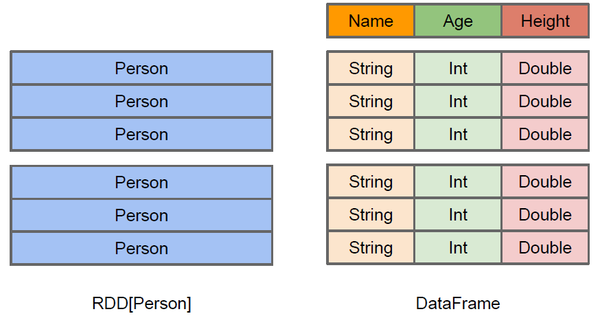

Spark SQL, DataFrames 和 Datasets
- 概述
- 入门指南
- 数据源
- 性能调优
- 分布式 SQL引擎
- PySpark Usage Guide for Pandas with Apache Arrow
- Migration Guide
- Upgrading From Spark SQL 2.3.0 to 2.3.1 and above
- Upgrading From Spark SQL 2.2 to 2.3
- Upgrading From Spark SQL 2.1 to 2.2
- Upgrading From Spark SQL 2.0 to 2.1
- Upgrading From Spark SQL 1.6 to 2.0
- Upgrading From Spark SQL 1.5 to 1.6
- Upgrading From Spark SQL 1.4 to 1.5
- Upgrading from Spark SQL 1.3 to 1.4
- Upgrading from Spark SQL 1.0-1.2 to 1.3
- Rename of SchemaRDD to DataFrame
- Unification of the Java and Scala APIs
- Isolation of Implicit Conversions and Removal of dsl Package (Scala-only)
- Removal of the type aliases in org.apache.spark.sql for DataType (Scala-only)
- UDF Registration Moved to
sqlContext.udf(Java & Scala) - Python DataTypes No Longer Singletons
- Compatibility with Apache Hive
- Reference
Overview
Spark SQL 是 Spark 处理结构化数据的一个模块。 与基础的 Spark RDD API 不同, Spark SQL 提供了查询结构化数据及计算结果等信息的接口。 在内部，Spark SQL 使用这个额外的信息去执行额外的优化，有几种方式可以跟 Spark SQL 进行交互，包括 SQL 和 Dataset API。 当使用相同执行引擎进行计算时，无论使用哪种 API / 语言都可以快速的计算， 这种统一意味着开发人员在给定的 transformation API 之间实现轻松的来回切换。
该页面所有例子使用的示例数据都包含在 Spark 的发布中，并且可以使用spark-shell, pyspark ,sparkR 来运行。
SQL
Spark SQL的功能之一是执行 SQL 查询。 Spark SQL 也能够被用于从已存在的 Hive 环境中读取数据。 更多关于如何配置这个特性的信息，请参考 Hive 表这部分。 当以另外的编程语言运行 SQL 时，查询结果将以 Dataset/DataFrame的形式返回。 您也可以使用 command-line 或者 JDBC/ODBC与 SQL交互。
RDD vs DataFrames vs Datasets
共性：
1、RDD、DataFrame、Dataset全都是spark平台下的分布式弹性数据集，为处理超大型数据提供便利。
2、三者都有惰性机制，在进行创建、转换，如map方法时，不会立即执行，只有在遇到Action如foreach时，三者才会开始遍历运算
一个 Dataset 是一个分布式的数据集合。Dataset 是在 Spark 1.6 中被添加的新接口，它提供了 RDD 的优点（强类型化，能够使用强大的 lambda 函数）和 Spark SQL 优化的执行引擎的好处。 一个 Dataset 可以从 JVM 对象来构造并且使用转换功能（map，flatMap，filter，等等）。Dataset API 在 Scala 和 Java 中是可用的。Python 不支持 Dataset API。但是由于 Python 的动态特性，许多 Dataset API 的有点已经可用了（也就是说，你可能通过 name 天生的 row.columnName 属性访问一行中的字段）。这种情况和 R 相似。
区别：
从上面的图中可以看出DataFrame和RDD的区别。RDD是分布式的 Java对象的集合，比如，RDD[Person]是以Person为类型参数，但是，Person类的内部结构对于RDD而言却是不可知的。DataFrame是一种以RDD为基础的分布式数据集，也就是分布式的Row对象的集合（每个Row对象代表一行记录），提供了详细的结构信息，也就是我们经常说的模式（schema），Spark SQL可以清楚地知道该数据集中包含哪些列、每列的名称和类型。 和RDD一样，DataFrame的各种变换操作也采用惰性机制，只是记录了各种转换的逻辑转换路线图（是一个DAG图），不会发生真正的计算，这个DAG图相当于一个逻辑查询计划，最终，会被翻译成物理查询计划，生成RDD DAG，按照之前介绍的RDD DAG的执行方式去完成最终的计算得到结果。
RDD每一个record为一个java对象。
DataFrame每个Record为Row对象，每个Row存着每个对象的属性值。
Dataset可以认为是DataFrame的一个特例，主要区别是Dataset每一个record存储的是一个强类型对象而不是一个Row。包括scheme信息。
peoples res20: org.apache.spark.rdd.RDD[People] = MapPartitionsRDD[2] at map at
res1: org.apache.spark.sql.Dataset[People] = [a: string, b: string ... 2 more fields]
res0: org.apache.spark.sql.DataFrame = [a: string, b: string ... 2 more fields]
入门指南
起始点 : SparkSession
Spark 中所有功能的入口点是 SparkSession 类。去创建一个基本的 SparkSession，仅使用SparkSession.builder():
import org.apache.spark.sql.SparkSession
val spark = SparkSession
.builder()
.appName("Spark SQL basic example")
.config("spark.some.config.option", "some-value")
.getOrCreate()
// For implicit conversions like converting RDDs to DataFrames
import spark.implicits._
The entry point into all functionality in Spark is the SparkSession class. To create a basic SparkSession, just use SparkSession.builder():
import org.apache.spark.sql.SparkSession;
SparkSession spark = SparkSession
.builder()
.appName("Java Spark SQL basic example")
.config("spark.some.config.option", "some-value")
.getOrCreate();
The entry point into all functionality in Spark is the SparkSession class. To create a basic SparkSession, just use SparkSession.builder:
from pyspark.sql import SparkSession
spark = SparkSession \
.builder \
.appName("Python Spark SQL basic example") \
.config("spark.some.config.option", "some-value") \
.getOrCreate()
The entry point into all functionality in Spark is the SparkSession class. To initialize a basic SparkSession, just call sparkR.session():
sparkR.session(appName = "R Spark SQL basic example", sparkConfig = list(spark.some.config.option = "some-value"))
Note that when invoked for the first time, sparkR.session() initializes a global SparkSession singleton instance, and always returns a reference to this instance for successive invocations. In this way, users only need to initialize the SparkSession once, then SparkR functions like read.df will be able to access this global instance implicitly, and users don’t need to pass the SparkSession instance around.
在 Spark 2.0 中 SparkSession 为 Hive 特性提供了内嵌的支持，包括使用 HiveQL 编写查询的能力，访问 Hive UDF，以及从 Hive 表中读取数据的能力。为了使用这些特性，你不需要去有一个已存在的 Hive 设置。
创建DataFrames
有了SparkSession, 应用程序可以从一个 已存在的 RDD，或者一个 Hive 表中，或者从 Spark 数据源 中创建 DataFrame。
举个例子，下面基于一个 JSON 文件的内容创建一个 DataFrame :
val df = spark.read.json("examples/src/main/resources/people.json")
// 显示DataFrame的内容
df.show()
// +----+-------+
// | age| name|
// +----+-------+
// |null|Michael|
// | 30| Andy|
// | 19| Justin|
// +----+-------+
With a SparkSession, applications can create DataFrames from an existing RDD,
from a Hive table, or from Spark data sources.
As an example, the following creates a DataFrame based on the content of a JSON file:
import org.apache.spark.sql.Dataset;
import org.apache.spark.sql.Row;
Dataset<Row> df = spark.read().json("examples/src/main/resources/people.json");
// Displays the content of the DataFrame to stdout
df.show();
// +----+-------+
// | age| name|
// +----+-------+
// |null|Michael|
// | 30| Andy|
// | 19| Justin|
// +----+-------+
With a SparkSession, applications can create DataFrames from an existing RDD,
from a Hive table, or from Spark data sources.
As an example, the following creates a DataFrame based on the content of a JSON file:
# spark is an existing SparkSession
df = spark.read.json("examples/src/main/resources/people.json")
# Displays the content of the DataFrame to stdout
df.show()
# +----+-------+
# | age| name|
# +----+-------+
# |null|Michael|
# | 30| Andy|
# | 19| Justin|
# +----+-------+
With a SparkSession, applications can create DataFrames from a local R data.frame,
from a Hive table, or from Spark data sources.
As an example, the following creates a DataFrame based on the content of a JSON file:
df <- read.json("examples/src/main/resources/people.json")
# Displays the content of the DataFrame
head(df)
## age name
## 1 NA Michael
## 2 30 Andy
## 3 19 Justin
# Another method to print the first few rows and optionally truncate the printing of long values
showDF(df)
## +----+-------+
## | age| name|
## +----+-------+
## |null|Michael|
## | 30| Andy|
## | 19| Justin|
## +----+-------+
无类型 Dataset 操作（aka DataFrame 操作）
DataFrame 提供了一个 DSL（domain-specific language）用于在 Scala，Java，Python 或者 R 中的结构化数据操作
正如上面提到的一样，在Spark 2.0 ，Scala 和 JavaAPI 中的 DataFrame 仅仅是多个 Row（行）的 Dataset 。这些操作也参考了与强类型的 Scala/Java Datasets 的 “类型转换” 相对应的 “无类型转换”。
这里包括一些使用 Dataset 进行结构化数据处理的示例 :
// This import is needed to use the $-notation
import spark.implicits._
// Print the schema in a tree format
df.printSchema()
// root
// |-- age: long (nullable = true)
// |-- name: string (nullable = true)
// Select only the "name" column
df.select("name").show()
// +-------+
// | name|
// +-------+
// |Michael|
// | Andy|
// | Justin|
// +-------+
// Select everybody, but increment the age by 1
df.select($"name", $"age" + 1).show()
// +-------+---------+
// | name|(age + 1)|
// +-------+---------+
// |Michael| null|
// | Andy| 31|
// | Justin| 20|
// +-------+---------+
// Select people older than 21
df.filter($"age" > 21).show()
// +---+----+
// |age|name|
// +---+----+
// | 30|Andy|
// +---+----+
// Count people by age
df.groupBy("age").count().show()
// +----+-----+
// | age|count|
// +----+-----+
// | 19| 1|
// |null| 1|
// | 30| 1|
// +----+-----+
能够在 DataFrame 上被执行的操作类型的完整列表请参考 API 文档。
除了简单的列引用和表达式之外，DataFrame 也有丰富的函数库，包括 string 操作，date 算术，常见的 math 操作以及更多。可用的完整列表请参考 DataFrame 函数。 DataFrame 函数参考。
// col("...") is preferable to df.col("...")
import static org.apache.spark.sql.functions.col;
// Print the schema in a tree format
df.printSchema();
// root
// |-- age: long (nullable = true)
// |-- name: string (nullable = true)
// Select only the "name" column
df.select("name").show();
// +-------+
// | name|
// +-------+
// |Michael|
// | Andy|
// | Justin|
// +-------+
// Select everybody, but increment the age by 1
df.select(col("name"), col("age").plus(1)).show();
// +-------+---------+
// | name|(age + 1)|
// +-------+---------+
// |Michael| null|
// | Andy| 31|
// | Justin| 20|
// +-------+---------+
// Select people older than 21
df.filter(col("age").gt(21)).show();
// +---+----+
// |age|name|
// +---+----+
// | 30|Andy|
// +---+----+
// Count people by age
df.groupBy("age").count().show();
// +----+-----+
// | age|count|
// +----+-----+
// | 19| 1|
// |null| 1|
// | 30| 1|
// +----+-----+
For a complete list of the types of operations that can be performed on a Dataset refer to the API Documentation.
In addition to simple column references and expressions, Datasets also have a rich library of functions including string manipulation, date arithmetic, common math operations and more. The complete list is available in the DataFrame Function Reference.
In Python it’s possible to access a DataFrame’s columns either by attribute
(df.age) or by indexing (df['age']). While the former is convenient for
interactive data exploration, users are highly encouraged to use the
latter form, which is future proof and won’t break with column names that
are also attributes on the DataFrame class.
# spark, df are from the previous example
# Print the schema in a tree format
df.printSchema()
# root
# |-- age: long (nullable = true)
# |-- name: string (nullable = true)
# Select only the "name" column
df.select("name").show()
# +-------+
# | name|
# +-------+
# |Michael|
# | Andy|
# | Justin|
# +-------+
# Select everybody, but increment the age by 1
df.select(df['name'], df['age'] + 1).show()
# +-------+---------+
# | name|(age + 1)|
# +-------+---------+
# |Michael| null|
# | Andy| 31|
# | Justin| 20|
# +-------+---------+
# Select people older than 21
df.filter(df['age'] > 21).show()
# +---+----+
# |age|name|
# +---+----+
# | 30|Andy|
# +---+----+
# Count people by age
df.groupBy("age").count().show()
# +----+-----+
# | age|count|
# +----+-----+
# | 19| 1|
# |null| 1|
# | 30| 1|
# +----+-----+
For a complete list of the types of operations that can be performed on a DataFrame refer to the API Documentation.
In addition to simple column references and expressions, DataFrames also have a rich library of functions including string manipulation, date arithmetic, common math operations and more. The complete list is available in the DataFrame Function Reference.
# Create the DataFrame
df <- read.json("examples/src/main/resources/people.json")
# Show the content of the DataFrame
head(df)
## age name
## 1 NA Michael
## 2 30 Andy
## 3 19 Justin
# Print the schema in a tree format
printSchema(df)
## root
## |-- age: long (nullable = true)
## |-- name: string (nullable = true)
# Select only the "name" column
head(select(df, "name"))
## name
## 1 Michael
## 2 Andy
## 3 Justin
# Select everybody, but increment the age by 1
head(select(df, df$name, df$age + 1))
## name (age + 1.0)
## 1 Michael NA
## 2 Andy 31
## 3 Justin 20
# Select people older than 21
head(where(df, df$age > 21))
## age name
## 1 30 Andy
# Count people by age
head(count(groupBy(df, "age")))
## age count
## 1 19 1
## 2 NA 1
## 3 30 1
For a complete list of the types of operations that can be performed on a DataFrame refer to the API Documentation.
In addition to simple column references and expressions, DataFrames also have a rich library of functions including string manipulation, date arithmetic, common math operations and more. The complete list is available in the DataFrame Function Reference.
以编程的方式运行 SQL 查询
SparkSession 使应用程序的 SQL 函数能够以编程的方式运行 SQL 查询并且将查询结果以一个 DataFrame返回。
// Register the DataFrame as a SQL temporary view
df.createOrReplaceTempView("people")
val sqlDF = spark.sql("SELECT * FROM people")
sqlDF.show()
// +----+-------+
// | age| name|
// +----+-------+
// |null|Michael|
// | 30| Andy|
// | 19| Justin|
// +----+-------+
The sql function on a SparkSession enables applications to run SQL queries programmatically and returns the result as a Dataset<Row>.
import org.apache.spark.sql.Dataset;
import org.apache.spark.sql.Row;
// Register the DataFrame as a SQL temporary view
df.createOrReplaceTempView("people");
Dataset<Row> sqlDF = spark.sql("SELECT * FROM people");
sqlDF.show();
// +----+-------+
// | age| name|
// +----+-------+
// |null|Michael|
// | 30| Andy|
// | 19| Justin|
// +----+-------+
The sql function on a SparkSession enables applications to run SQL queries programmatically and returns the result as a DataFrame.
# Register the DataFrame as a SQL temporary view
df.createOrReplaceTempView("people")
sqlDF = spark.sql("SELECT * FROM people")
sqlDF.show()
# +----+-------+
# | age| name|
# +----+-------+
# |null|Michael|
# | 30| Andy|
# | 19| Justin|
# +----+-------+
The sql function enables applications to run SQL queries programmatically and returns the result as a SparkDataFrame.
df <- sql("SELECT * FROM table")
Global Temporary View
Spark SQL中的临时视图是会话范围的，如果创建它的会话终止，它将消失。 如果您希望拥有一个在所有会话之间共享的临时视图并保持活动状态，直到Spark应用程序终止，您可以创建一个全局临时视图。 全局临时视图与系统保留的数据库global_temp绑定，我们必须使用限定名称来引用它，例如 SELECT * FROM global_temp.view1。
// Register the DataFrame as a global temporary view
df.createGlobalTempView("people")
// Global temporary view is tied to a system preserved database `global_temp`
spark.sql("SELECT * FROM global_temp.people").show()
// +----+-------+
// | age| name|
// +----+-------+
// |null|Michael|
// | 30| Andy|
// | 19| Justin|
// +----+-------+
// Global temporary view is cross-session
spark.newSession().sql("SELECT * FROM global_temp.people").show()
// +----+-------+
// | age| name|
// +----+-------+
// |null|Michael|
// | 30| Andy|
// | 19| Justin|
// +----+-------+
// Register the DataFrame as a global temporary view
df.createGlobalTempView("people");
// Global temporary view is tied to a system preserved database `global_temp`
spark.sql("SELECT * FROM global_temp.people").show();
// +----+-------+
// | age| name|
// +----+-------+
// |null|Michael|
// | 30| Andy|
// | 19| Justin|
// +----+-------+
// Global temporary view is cross-session
spark.newSession().sql("SELECT * FROM global_temp.people").show();
// +----+-------+
// | age| name|
// +----+-------+
// |null|Michael|
// | 30| Andy|
// | 19| Justin|
// +----+-------+
# Register the DataFrame as a global temporary view
df.createGlobalTempView("people")
# Global temporary view is tied to a system preserved database `global_temp`
spark.sql("SELECT * FROM global_temp.people").show()
# +----+-------+
# | age| name|
# +----+-------+
# |null|Michael|
# | 30| Andy|
# | 19| Justin|
# +----+-------+
# Global temporary view is cross-session
spark.newSession().sql("SELECT * FROM global_temp.people").show()
# +----+-------+
# | age| name|
# +----+-------+
# |null|Michael|
# | 30| Andy|
# | 19| Justin|
# +----+-------+
CREATE GLOBAL TEMPORARY VIEW temp_view AS SELECT a + 1, b * 2 FROM tbl
SELECT * FROM global_temp.temp_viewCreating Datasets
Dataset 与 RDD 相似，但是，他们不使用 Java 序列化或者 Kryo序列化，他们使用专门的 Encoder（编码器） 来序列化对象 以便通过网络进行处理或传输。 虽然编码器和标准的序列化都负责将一个对象序列化成字节，但编码器是动态生成的代码， 并使用一种格式，允许Spark执行许多操作，如过滤，排序和散列，而无需将字节反序列化为对象。
case class Person(name: String, age: Long)
// Encoders are created for case classes
val caseClassDS = Seq(Person("Andy", 32)).toDS()
caseClassDS.show()
// +----+---+
// |name|age|
// +----+---+
// |Andy| 32|
// +----+---+
// Encoders for most common types are automatically provided by importing spark.implicits._
val primitiveDS = Seq(1, 2, 3).toDS()
primitiveDS.map(_ + 1).collect() // Returns: Array(2, 3, 4)
// DataFrames can be converted to a Dataset by providing a class. Mapping will be done by name
val path = "examples/src/main/resources/people.json"
val peopleDS = spark.read.json(path).as[Person]
peopleDS.show()
// +----+-------+
// | age| name|
// +----+-------+
// |null|Michael|
// | 30| Andy|
// | 19| Justin|
// +----+-------+
import java.util.Arrays;
import java.util.Collections;
import java.io.Serializable;
import org.apache.spark.api.java.function.MapFunction;
import org.apache.spark.sql.Dataset;
import org.apache.spark.sql.Row;
import org.apache.spark.sql.Encoder;
import org.apache.spark.sql.Encoders;
public static class Person implements Serializable {
private String name;
private int age;
public String getName() {
return name;
}
public void setName(String name) {
this.name = name;
}
public int getAge() {
return age;
}
public void setAge(int age) {
this.age = age;
}
}
// Create an instance of a Bean class
Person person = new Person();
person.setName("Andy");
person.setAge(32);
// Encoders are created for Java beans
Encoder<Person> personEncoder = Encoders.bean(Person.class);
Dataset<Person> javaBeanDS = spark.createDataset(
Collections.singletonList(person),
personEncoder
);
javaBeanDS.show();
// +---+----+
// |age|name|
// +---+----+
// | 32|Andy|
// +---+----+
// Encoders for most common types are provided in class Encoders
Encoder<Integer> integerEncoder = Encoders.INT();
Dataset<Integer> primitiveDS = spark.createDataset(Arrays.asList(1, 2, 3), integerEncoder);
Dataset<Integer> transformedDS = primitiveDS.map(
(MapFunction<Integer, Integer>) value -> value + 1,
integerEncoder);
transformedDS.collect(); // Returns [2, 3, 4]
// DataFrames can be converted to a Dataset by providing a class. Mapping based on name
String path = "examples/src/main/resources/people.json";
Dataset<Person> peopleDS = spark.read().json(path).as(personEncoder);
peopleDS.show();
// +----+-------+
// | age| name|
// +----+-------+
// |null|Michael|
// | 30| Andy|
// | 19| Justin|
// +----+-------+
RDD 的互操作性
Spark SQL 支持两种不同的方法用于转换已存在的 RDD 成为 Dataset。
第一种方法是使用反射去推断一个包含指定的对象类型的 RDD 的 Schema。在你的 Spark 应用程序中当你已知 Schema 时这个基于方法的反射可以让你的代码更简洁。
第二种用于创建 Dataset 的方法是通过一个允许你构造一个 Schema 然后把它应用到一个已存在的 RDD 的编程接口。然而这种方法更繁琐，当列和它们的类型知道运行时都是未知时它允许你去构造 Dataset。
使用反射推断 Schema (通过样例类)
Spark SQL 的 Scala 接口支持自动转换一个包含 case classes 的 RDD 为 DataFrame。 Case class 定义了表的 Schema。Case class 的参数名使用反射读取并且成为了列名。 Case class 也可以是嵌套的或者包含像 SeqS 或者 ArrayS 这样的复杂类型。 这个 RDD 能够被隐式转换成一个 DataFrame 然后被注册为一个表。表可以用于后续的 SQL 语句。
// 将一个RDD隐式转换为一个DataFrames
case class Person(name: String, age: Long)
import spark.implicits._
// 从一个文本文件中创建一个People对象类型的RDD,然后将其转为DataFrame。 spark.sparkContext 得到sparkContext对象。
val peopleDF = spark.sparkContext
.textFile("examples/src/main/resources/people.txt")
.map(_.split(","))
.map(attributes => Person(attributes(0), attributes(1).trim.toInt))
.toDF()
// 将此DataFrame注册为一个临时的视图 以便后面使用这个视图进行查询操作。
peopleDF.createOrReplaceTempView("people")
// 可以使用Spark提供的sql方法运行SQL语句
val teenagersDF = spark.sql("SELECT name, age FROM people WHERE age BETWEEN 13 AND 19")
// 结果中的行的列可以通过字段索引访问。
teenagersDF.map(teenager => "Name: " + teenager(0)).show()
// +------------+
// | value|
// +------------+
// |Name: Justin|
// +------------+
// 或者通过字段名称进行访问。
teenagersDF.map(teenager => "Name: " + teenager.getAs[String]("name")).show()
// +------------+
// | value|
// +------------+
// |Name: Justin|
// +------------+
// No pre-defined encoders for Dataset[Map[K,V]], define explicitly
implicit val mapEncoder = org.apache.spark.sql.Encoders.kryo[Map[String, Any]]
// Primitive types and case classes can be also defined as
// implicit val stringIntMapEncoder: Encoder[Map[String, Any]] = ExpressionEncoder()
// row.getValuesMap[T] retrieves multiple columns at once into a Map[String, T]
teenagersDF.map(teenager => teenager.getValuesMap[Any](List("name", "age"))).collect()
// Array(Map("name" -> "Justin", "age" -> 19))
Spark SQL supports automatically converting an RDD of
JavaBeans into a DataFrame.
The BeanInfo, obtained using reflection, defines the schema of the table. Currently, Spark SQL
does not support JavaBeans that contain Map field(s). Nested JavaBeans and List or Array
fields are supported though. You can create a JavaBean by creating a class that implements
Serializable and has getters and setters for all of its fields.
import org.apache.spark.api.java.JavaRDD;
import org.apache.spark.api.java.function.Function;
import org.apache.spark.api.java.function.MapFunction;
import org.apache.spark.sql.Dataset;
import org.apache.spark.sql.Row;
import org.apache.spark.sql.Encoder;
import org.apache.spark.sql.Encoders;
// Create an RDD of Person objects from a text file
JavaRDD<Person> peopleRDD = spark.read()
.textFile("examples/src/main/resources/people.txt")
.javaRDD()
.map(line -> {
String[] parts = line.split(",");
Person person = new Person();
person.setName(parts[0]);
person.setAge(Integer.parseInt(parts[1].trim()));
return person;
});
// Apply a schema to an RDD of JavaBeans to get a DataFrame
Dataset<Row> peopleDF = spark.createDataFrame(peopleRDD, Person.class);
// Register the DataFrame as a temporary view
peopleDF.createOrReplaceTempView("people");
// SQL statements can be run by using the sql methods provided by spark
Dataset<Row> teenagersDF = spark.sql("SELECT name FROM people WHERE age BETWEEN 13 AND 19");
// The columns of a row in the result can be accessed by field index
Encoder<String> stringEncoder = Encoders.STRING();
Dataset<String> teenagerNamesByIndexDF = teenagersDF.map(
(MapFunction<Row, String>) row -> "Name: " + row.getString(0),
stringEncoder);
teenagerNamesByIndexDF.show();
// +------------+
// | value|
// +------------+
// |Name: Justin|
// +------------+
// or by field name
Dataset<String> teenagerNamesByFieldDF = teenagersDF.map(
(MapFunction<Row, String>) row -> "Name: " + row.<String>getAs("name"),
stringEncoder);
teenagerNamesByFieldDF.show();
// +------------+
// | value|
// +------------+
// |Name: Justin|
// +------------+
Spark SQL can convert an RDD of Row objects to a DataFrame, inferring the datatypes. Rows are constructed by passing a list of key/value pairs as kwargs to the Row class. The keys of this list define the column names of the table, and the types are inferred by sampling the whole dataset, similar to the inference that is performed on JSON files.
from pyspark.sql import Row
sc = spark.sparkContext
# Load a text file and convert each line to a Row.
lines = sc.textFile("examples/src/main/resources/people.txt")
parts = lines.map(lambda l: l.split(","))
people = parts.map(lambda p: Row(name=p[0], age=int(p[1])))
# Infer the schema, and register the DataFrame as a table.
schemaPeople = spark.createDataFrame(people)
schemaPeople.createOrReplaceTempView("people")
# SQL can be run over DataFrames that have been registered as a table.
teenagers = spark.sql("SELECT name FROM people WHERE age >= 13 AND age <= 19")
# The results of SQL queries are Dataframe objects.
# rdd returns the content as an :class:`pyspark.RDD` of :class:`Row`.
teenNames = teenagers.rdd.map(lambda p: "Name: " + p.name).collect()
for name in teenNames:
print(name)
# Name: Justin
以编程的方式指定 Schema (通过 StructType创建的scheme应用到RDD上)
当 case class 不能够在执行之前被定义（例如，records 记录的结构在一个 string 字符串中被编码了，或者一个 text 文本 dataset 将被解析并且不同的用户投影的字段是不一样的）。一个 DataFrame 可以使用下面的三步以编程的方式来创建。
- 将从文本文件中创建的原始RDD使用map函数转为ROW类型的RDD。
- Step 1 被创建后，创建 Schema 表示一个 StructType(StructField(name,StringType,true),...) 匹配 RDD 中的 Rows（行）的结构。
- 通过 SparkSession 提供的 createDataFrame 方法应用 Schema 到 RDD 的 RowS（行）。
示例:
import org.apache.spark.sql.types._
// 从文本文件中创建一个原始的RDD
val peopleRDD = spark.sparkContext.textFile("examples/src/main/resources/people.txt")
// schema以字符串形式编码
val schemaString = "name age"
// 创建一个schema
val fields = schemaString.split(" ")
.map(fieldName => StructField(fieldName, StringType, nullable = true))
val schema = StructType(fields)
// 转换RDD 的每行记录为一个Row对象。
val rowRDD = peopleRDD
.map(_.split(","))
.map(attributes => Row(attributes(0), attributes(1).trim))
// 应用schema 到 RDD
val peopleDF = spark.createDataFrame(rowRDD, schema)
// 使用DataFrame创建一个临时视图
peopleDF.createOrReplaceTempView("people")
// SQL可以在使用DataFrames创建的临时视图上运行
val results = spark.sql("SELECT name FROM people")
// SQL查询的结果是DataFrames并支持所有正常的RDD操作
//可以通过字段索引或字段名称访问结果中行的列e
results.map(attributes => "Name: " + attributes(0)).show()
// +-------------+
// | value|
// +-------------+
// |Name: Michael|
// | Name: Andy|
// | Name: Justin|
// +-------------+
When JavaBean classes cannot be defined ahead of time (for example,
the structure of records is encoded in a string, or a text dataset will be parsed and
fields will be projected differently for different users),
a Dataset<Row> can be created programmatically with three steps.
- Create an RDD of
Rows from the original RDD; - Create the schema represented by a
StructTypematching the structure ofRows in the RDD created in Step 1. - Apply the schema to the RDD of
Rows viacreateDataFramemethod provided bySparkSession.
For example:
import java.util.ArrayList;
import java.util.List;
import org.apache.spark.api.java.JavaRDD;
import org.apache.spark.api.java.function.Function;
import org.apache.spark.sql.Dataset;
import org.apache.spark.sql.Row;
import org.apache.spark.sql.types.DataTypes;
import org.apache.spark.sql.types.StructField;
import org.apache.spark.sql.types.StructType;
// Create an RDD
JavaRDD<String> peopleRDD = spark.sparkContext()
.textFile("examples/src/main/resources/people.txt", 1)
.toJavaRDD();
// The schema is encoded in a string
String schemaString = "name age";
// Generate the schema based on the string of schema
List<StructField> fields = new ArrayList<>();
for (String fieldName : schemaString.split(" ")) {
StructField field = DataTypes.createStructField(fieldName, DataTypes.StringType, true);
fields.add(field);
}
StructType schema = DataTypes.createStructType(fields);
// Convert records of the RDD (people) to Rows
JavaRDD<Row> rowRDD = peopleRDD.map((Function<String, Row>) record -> {
String[] attributes = record.split(",");
return RowFactory.create(attributes[0], attributes[1].trim());
});
// Apply the schema to the RDD
Dataset<Row> peopleDataFrame = spark.createDataFrame(rowRDD, schema);
// Creates a temporary view using the DataFrame
peopleDataFrame.createOrReplaceTempView("people");
// SQL can be run over a temporary view created using DataFrames
Dataset<Row> results = spark.sql("SELECT name FROM people");
// The results of SQL queries are DataFrames and support all the normal RDD operations
// The columns of a row in the result can be accessed by field index or by field name
Dataset<String> namesDS = results.map(
(MapFunction<Row, String>) row -> "Name: " + row.getString(0),
Encoders.STRING());
namesDS.show();
// +-------------+
// | value|
// +-------------+
// |Name: Michael|
// | Name: Andy|
// | Name: Justin|
// +-------------+
When a dictionary of kwargs cannot be defined ahead of time (for example,
the structure of records is encoded in a string, or a text dataset will be parsed and
fields will be projected differently for different users),
a DataFrame can be created programmatically with three steps.
- Create an RDD of tuples or lists from the original RDD;
- Create the schema represented by a
StructTypematching the structure of tuples or lists in the RDD created in the step 1. - Apply the schema to the RDD via
createDataFramemethod provided bySparkSession.
For example:
# Import data types
from pyspark.sql.types import *
sc = spark.sparkContext
# Load a text file and convert each line to a Row.
lines = sc.textFile("examples/src/main/resources/people.txt")
parts = lines.map(lambda l: l.split(","))
# Each line is converted to a tuple.
people = parts.map(lambda p: (p[0], p[1].strip()))
# The schema is encoded in a string.
schemaString = "name age"
fields = [StructField(field_name, StringType(), True) for field_name in schemaString.split()]
schema = StructType(fields)
# Apply the schema to the RDD.
schemaPeople = spark.createDataFrame(people, schema)
# Creates a temporary view using the DataFrame
schemaPeople.createOrReplaceTempView("people")
# SQL can be run over DataFrames that have been registered as a table.
results = spark.sql("SELECT name FROM people")
results.show()
# +-------+
# | name|
# +-------+
# |Michael|
# | Andy|
# | Justin|
# +-------+
Aggregations (聚合)
DataFrames 内置的聚合函数 :
count(), countDistinct(), avg(), max(), min(), 等。
虽然这些函数是为DataFrames设计的，但Spark SQL也有类型安全的版本 其中一些在Scala和
Java 中使用强类型数据集。
此外，用户不限于预定义的聚合函数，并且可以创建自己的聚合函数。
无类型用户自定义聚合函数
用户必须扩展UserDefinedAggregateFunction抽象类以实现自定义无类型聚合函数。 例如，用户定义的平均值可能如下所示：
import org.apache.spark.sql.{Row, SparkSession}
import org.apache.spark.sql.expressions.MutableAggregationBuffer
import org.apache.spark.sql.expressions.UserDefinedAggregateFunction
import org.apache.spark.sql.types._
object MyAverage extends UserDefinedAggregateFunction {
// Data types of input arguments of this aggregate function
def inputSchema: StructType = StructType(StructField("inputColumn", LongType) :: Nil)
// Data types of values in the aggregation buffer
def bufferSchema: StructType = {
StructType(StructField("sum", LongType) :: StructField("count", LongType) :: Nil)
}
// The data type of the returned value
def dataType: DataType = DoubleType
// Whether this function always returns the same output on the identical input
def deterministic: Boolean = true
// Initializes the given aggregation buffer. The buffer itself is a `Row` that in addition to
// standard methods like retrieving a value at an index (e.g., get(), getBoolean()), provides
// the opportunity to update its values. Note that arrays and maps inside the buffer are still
// immutable.
def initialize(buffer: MutableAggregationBuffer): Unit = {
buffer(0) = 0L
buffer(1) = 0L
}
// Updates the given aggregation buffer `buffer` with new input data from `input`
def update(buffer: MutableAggregationBuffer, input: Row): Unit = {
if (!input.isNullAt(0)) {
buffer(0) = buffer.getLong(0) + input.getLong(0)
buffer(1) = buffer.getLong(1) + 1
}
}
// Merges two aggregation buffers and stores the updated buffer values back to `buffer1`
def merge(buffer1: MutableAggregationBuffer, buffer2: Row): Unit = {
buffer1(0) = buffer1.getLong(0) + buffer2.getLong(0)
buffer1(1) = buffer1.getLong(1) + buffer2.getLong(1)
}
// Calculates the final result
def evaluate(buffer: Row): Double = buffer.getLong(0).toDouble / buffer.getLong(1)
}
// Register the function to access it
spark.udf.register("myAverage", MyAverage)
val df = spark.read.json("examples/src/main/resources/employees.json")
df.createOrReplaceTempView("employees")
df.show()
// +-------+------+
// | name|salary|
// +-------+------+
// |Michael| 3000|
// | Andy| 4500|
// | Justin| 3500|
// | Berta| 4000|
// +-------+------+
val result = spark.sql("SELECT myAverage(salary) as average_salary FROM employees")
result.show()
// +--------------+
// |average_salary|
// +--------------+
// | 3750.0|
// +--------------+
import java.util.ArrayList;
import java.util.List;
import org.apache.spark.sql.Dataset;
import org.apache.spark.sql.Row;
import org.apache.spark.sql.SparkSession;
import org.apache.spark.sql.expressions.MutableAggregationBuffer;
import org.apache.spark.sql.expressions.UserDefinedAggregateFunction;
import org.apache.spark.sql.types.DataType;
import org.apache.spark.sql.types.DataTypes;
import org.apache.spark.sql.types.StructField;
import org.apache.spark.sql.types.StructType;
public static class MyAverage extends UserDefinedAggregateFunction {
private StructType inputSchema;
private StructType bufferSchema;
public MyAverage() {
List<StructField> inputFields = new ArrayList<>();
inputFields.add(DataTypes.createStructField("inputColumn", DataTypes.LongType, true));
inputSchema = DataTypes.createStructType(inputFields);
List<StructField> bufferFields = new ArrayList<>();
bufferFields.add(DataTypes.createStructField("sum", DataTypes.LongType, true));
bufferFields.add(DataTypes.createStructField("count", DataTypes.LongType, true));
bufferSchema = DataTypes.createStructType(bufferFields);
}
// Data types of input arguments of this aggregate function
public StructType inputSchema() {
return inputSchema;
}
// Data types of values in the aggregation buffer
public StructType bufferSchema() {
return bufferSchema;
}
// The data type of the returned value
public DataType dataType() {
return DataTypes.DoubleType;
}
// Whether this function always returns the same output on the identical input
public boolean deterministic() {
return true;
}
// Initializes the given aggregation buffer. The buffer itself is a `Row` that in addition to
// standard methods like retrieving a value at an index (e.g., get(), getBoolean()), provides
// the opportunity to update its values. Note that arrays and maps inside the buffer are still
// immutable.
public void initialize(MutableAggregationBuffer buffer) {
buffer.update(0, 0L);
buffer.update(1, 0L);
}
// Updates the given aggregation buffer `buffer` with new input data from `input`
public void update(MutableAggregationBuffer buffer, Row input) {
if (!input.isNullAt(0)) {
long updatedSum = buffer.getLong(0) + input.getLong(0);
long updatedCount = buffer.getLong(1) + 1;
buffer.update(0, updatedSum);
buffer.update(1, updatedCount);
}
}
// Merges two aggregation buffers and stores the updated buffer values back to `buffer1`
public void merge(MutableAggregationBuffer buffer1, Row buffer2) {
long mergedSum = buffer1.getLong(0) + buffer2.getLong(0);
long mergedCount = buffer1.getLong(1) + buffer2.getLong(1);
buffer1.update(0, mergedSum);
buffer1.update(1, mergedCount);
}
// Calculates the final result
public Double evaluate(Row buffer) {
return ((double) buffer.getLong(0)) / buffer.getLong(1);
}
}
// Register the function to access it
spark.udf().register("myAverage", new MyAverage());
Dataset<Row> df = spark.read().json("examples/src/main/resources/employees.json");
df.createOrReplaceTempView("employees");
df.show();
// +-------+------+
// | name|salary|
// +-------+------+
// |Michael| 3000|
// | Andy| 4500|
// | Justin| 3500|
// | Berta| 4000|
// +-------+------+
Dataset<Row> result = spark.sql("SELECT myAverage(salary) as average_salary FROM employees");
result.show();
// +--------------+
// |average_salary|
// +--------------+
// | 3750.0|
// +--------------+
类型安全的用户自定义聚合函数
强类型数据集的用户定义聚合围绕Aggregator抽象类。 例如，类型安全的用户定义平均值可能如下所示：
import org.apache.spark.sql.{Encoder, Encoders, SparkSession}
import org.apache.spark.sql.expressions.Aggregator
case class Employee(name: String, salary: Long)
case class Average(var sum: Long, var count: Long)
object MyAverage extends Aggregator[Employee, Average, Double] {
// A zero value for this aggregation. Should satisfy the property that any b + zero = b
def zero: Average = Average(0L, 0L)
// Combine two values to produce a new value. For performance, the function may modify `buffer`
// and return it instead of constructing a new object
def reduce(buffer: Average, employee: Employee): Average = {
buffer.sum += employee.salary
buffer.count += 1
buffer
}
// Merge two intermediate values
def merge(b1: Average, b2: Average): Average = {
b1.sum += b2.sum
b1.count += b2.count
b1
}
// Transform the output of the reduction
def finish(reduction: Average): Double = reduction.sum.toDouble / reduction.count
// Specifies the Encoder for the intermediate value type
def bufferEncoder: Encoder[Average] = Encoders.product
// Specifies the Encoder for the final output value type
def outputEncoder: Encoder[Double] = Encoders.scalaDouble
}
val ds = spark.read.json("examples/src/main/resources/employees.json").as[Employee]
ds.show()
// +-------+------+
// | name|salary|
// +-------+------+
// |Michael| 3000|
// | Andy| 4500|
// | Justin| 3500|
// | Berta| 4000|
// +-------+------+
// Convert the function to a `TypedColumn` and give it a name
val averageSalary = MyAverage.toColumn.name("average_salary")
val result = ds.select(averageSalary)
result.show()
// +--------------+
// |average_salary|
// +--------------+
// | 3750.0|
// +--------------+
import java.io.Serializable;
import org.apache.spark.sql.Dataset;
import org.apache.spark.sql.Encoder;
import org.apache.spark.sql.Encoders;
import org.apache.spark.sql.SparkSession;
import org.apache.spark.sql.TypedColumn;
import org.apache.spark.sql.expressions.Aggregator;
public static class Employee implements Serializable {
private String name;
private long salary;
// Constructors, getters, setters...
}
public static class Average implements Serializable {
private long sum;
private long count;
// Constructors, getters, setters...
}
public static class MyAverage extends Aggregator<Employee, Average, Double> {
// A zero value for this aggregation. Should satisfy the property that any b + zero = b
public Average zero() {
return new Average(0L, 0L);
}
// Combine two values to produce a new value. For performance, the function may modify `buffer`
// and return it instead of constructing a new object
public Average reduce(Average buffer, Employee employee) {
long newSum = buffer.getSum() + employee.getSalary();
long newCount = buffer.getCount() + 1;
buffer.setSum(newSum);
buffer.setCount(newCount);
return buffer;
}
// Merge two intermediate values
public Average merge(Average b1, Average b2) {
long mergedSum = b1.getSum() + b2.getSum();
long mergedCount = b1.getCount() + b2.getCount();
b1.setSum(mergedSum);
b1.setCount(mergedCount);
return b1;
}
// Transform the output of the reduction
public Double finish(Average reduction) {
return ((double) reduction.getSum()) / reduction.getCount();
}
// Specifies the Encoder for the intermediate value type
public Encoder<Average> bufferEncoder() {
return Encoders.bean(Average.class);
}
// Specifies the Encoder for the final output value type
public Encoder<Double> outputEncoder() {
return Encoders.DOUBLE();
}
}
Encoder<Employee> employeeEncoder = Encoders.bean(Employee.class);
String path = "examples/src/main/resources/employees.json";
Dataset<Employee> ds = spark.read().json(path).as(employeeEncoder);
ds.show();
// +-------+------+
// | name|salary|
// +-------+------+
// |Michael| 3000|
// | Andy| 4500|
// | Justin| 3500|
// | Berta| 4000|
// +-------+------+
MyAverage myAverage = new MyAverage();
// Convert the function to a `TypedColumn` and give it a name
TypedColumn<Employee, Double> averageSalary = myAverage.toColumn().name("average_salary");
Dataset<Double> result = ds.select(averageSalary);
result.show();
// +--------------+
// |average_salary|
// +--------------+
// | 3750.0|
// +--------------+
数据源
Spark SQL 支持通过 DataFrame 接口操作多种数据源。一个 DataFrame 可以通过关联转换来操作，也可以被创建为一个临时的 view。 注册一个 DataFrame 作为一个临时的 view 就可以允许你在数据集上运行 SQL 查询。 本节介绍使用Spark数据源加载和保存数据的一般方法，然后介绍可用于内置数据源的特定选项。
通用的 Load/Save 函数
在最简单的方式下，默认的数据源（parquet 除非另外配置通过spark.sql.sources.default）将会用于所有的操作。
注意:spark.read.load("path") 可以加载任何格式的数据文件(json、parquet、csv等)。
val usersDF = spark.read.load("examples/src/main/resources/users.parquet")
usersDF.select("name", "favorite_color").write.save("namesAndFavColors.parquet")
Dataset<Row> usersDF = spark.read().load("examples/src/main/resources/users.parquet");
usersDF.select("name", "favorite_color").write().save("namesAndFavColors.parquet");
df = spark.read.load("examples/src/main/resources/users.parquet")
df.select("name", "favorite_color").write.save("namesAndFavColors.parquet")
df <- read.df("examples/src/main/resources/users.parquet")
write.df(select(df, "name", "favorite_color"), "namesAndFavColors.parquet")
手动指定选项
你也可以手动的指定数据源，并且将与你想要传递给数据源的任何额外选项一起使用。数据源由其完全限定名指定（例如 : org.apache.spark.sql.parquet），不过对于内置数据源你也可以使用它们的缩写名（json, parquet, jdbc）。使用下面这个语法可以将从任意类型数据源加载的DataFrames 转换为其他类型。
加载 JSON file:
val peopleDF = spark.read.format("json").load("examples/src/main/resources/people.json")
peopleDF.select("name", "age").write.format("parquet").save("namesAndAges.parquet")
Dataset<Row> peopleDF =
spark.read().format("json").load("examples/src/main/resources/people.json");
peopleDF.select("name", "age").write().format("parquet").save("namesAndAges.parquet");
df = spark.read.load("examples/src/main/resources/people.json", format="json")
df.select("name", "age").write.save("namesAndAges.parquet", format="parquet")
df <- read.df("examples/src/main/resources/people.json", "json")
namesAndAges <- select(df, "name", "age")
write.df(namesAndAges, "namesAndAges.parquet", "parquet")
加载 CSV file :
val peopleDFCsv = spark.read.format("csv")
.option("sep", ";")
.option("inferSchema", "true")
.option("header", "true")
.load("examples/src/main/resources/people.csv")
Dataset<Row> peopleDFCsv = spark.read().format("csv")
.option("sep", ";")
.option("inferSchema", "true")
.option("header", "true")
.load("examples/src/main/resources/people.csv");
df = spark.read.load("examples/src/main/resources/people.csv",
format="csv", sep=":", inferSchema="true", header="true")
df <- read.df("examples/src/main/resources/people.csv", "csv")
namesAndAges <- select(df, "name", "age")
直接在文件上运行 SQL
你也可以直接在文件上运行 SQL 查询来替代使用 API 将文件加载到 DataFrame 再进行查询。(注意：parquet前缀 和 ` ` 符号)
val sqlDF = spark.sql("SELECT * FROM parquet.`examples/src/main/resources/users.parquet`")
Dataset<Row> sqlDF =
spark.sql("SELECT * FROM parquet.`examples/src/main/resources/users.parquet`");
df = spark.sql("SELECT * FROM parquet.`examples/src/main/resources/users.parquet`")
df <- sql("SELECT * FROM parquet.`examples/src/main/resources/users.parquet`")
Save Modes （保存模式）
Save 操作可以使用 SaveMode，可以指定如何处理已经存在的数据。
这些保存模式没有利用任何锁并且也不是原子操作。
此外，执行Overwrite, 新数据写入之前会先将旧数据删除。
| Scala/Java | Any Language | Meaning |
|---|---|---|
SaveMode.ErrorIfExists (默认) |
"error" or "errorifexists" (默认) |
将DataFrame 保存到某个数据源的时候, 如果数据存在,一个异常将会被抛出。 |
SaveMode.Append |
"append" |
将DataFrame保存到数据源时，如果数据/表已经存在，则DataFrame的内容应该附加到现有数据。 |
SaveMode.Overwrite |
"overwrite" |
覆盖模式意味着在将DataFrame保存到数据源时，如果数据/表已经存在，则原有的数据将被DataFrame的内容覆盖。 |
SaveMode.Ignore |
"ignore" |
忽略模式意味着在将DataFrame保存到数据源时，如果数据已存在，则预期保存操作不会保存DataFrame的内容并且不会更改现有数据。这类似于SQL中的CREATE TABLE IF NOT EXISTS。 |
保存到持久化表
也可以使用 saveAsTable 命令将 DataFrames 作为持久表保存到Hive Metastore中。
请注意，使用此功能不需要现有的Hive部署。
Spark将为您创建默认的本地Hive Metastore（使用Derby）。与createOrReplaceTempView命令不同，
saveAsTable 将实现 DataFrame 的内容并创建指向 Hive Metastore 中数据的指针。
只要您保持与同一Metastore的连接，即使您的Spark程序重新启动后，持久表仍然存在。
可以通过使用表的名称调用SparkSession上的table方法来创建持久表的DataFrame。
对于基于文件的数据源，例如 text, parquet, json, 等。
您可以通过路径选项指定自定义表路径，例如
df.write.option("path", "/some/path").saveAsTable("t")。删除表时，将不会删除自定义表路径，并且表数据仍然存在。 If no custom table path is
如果未指定自定义表路径，则Spark会将数据写入仓库目录下的默认表路径。删除表时，也将删除默认表路径。
从Spark 2.1开始，持久数据源表将每个分区元数据存储在Hive Metastore中。这带来了几个好处：
- 由于Metastore只能返回查询所需的分区，因此不再需要在表的第一个查询中发现所有分区。
- 现在，对于使用Datasource API 创建的表，可以使用
ALTER TABLE PARTITION ... SET LOCATION等Hive DDL。
请注意，在创建外部数据源表 具有路径选项的表）时，默认情况下不会收集分区信息。要同步Metastore中的分区信息，可以调用MSCK REPAIR TABLE。
Bucketing, Sorting and Partitioning
For file-based data source, it is also possible to bucket and sort or partition the output. Bucketing and sorting are applicable only to persistent tables: 对于基于文件的数据源，还可以对输出进行分桶和排序或分区。 分桶和排序仅适用于持久表：
peopleDF.write.bucketBy(42, "name").sortBy("age").saveAsTable("people_bucketed")
peopleDF.write().bucketBy(42, "name").sortBy("age").saveAsTable("people_bucketed");
df.write.bucketBy(42, "name").sortBy("age").saveAsTable("people_bucketed")
CREATE TABLE users_bucketed_by_name(
name STRING,
favorite_color STRING,
favorite_numbers array<integer>
) USING parquet
CLUSTERED BY(name) INTO 42 BUCKETS;分区可以在使用数据集API时与 save 和 saveAsTable 一起使用。
usersDF.write.partitionBy("favorite_color").format("parquet").save("namesPartByColor.parquet")
usersDF
.write()
.partitionBy("favorite_color")
.format("parquet")
.save("namesPartByColor.parquet");
df.write.partitionBy("favorite_color").format("parquet").save("namesPartByColor.parquet")
CREATE TABLE users_by_favorite_color(
name STRING,
favorite_color STRING,
favorite_numbers array<integer>
) USING csv PARTITIONED BY(favorite_color);可以对同一张表使用分桶和分区:
usersDF
.write
.partitionBy("favorite_color")
.bucketBy(42, "name")
.saveAsTable("users_partitioned_bucketed")
peopleDF
.write()
.partitionBy("favorite_color")
.bucketBy(42, "name")
.saveAsTable("people_partitioned_bucketed");
df = spark.read.parquet("examples/src/main/resources/users.parquet")
(df
.write
.partitionBy("favorite_color")
.bucketBy(42, "name")
.saveAsTable("people_partitioned_bucketed"))
CREATE TABLE users_bucketed_and_partitioned(
name STRING,
favorite_color STRING,
favorite_numbers array<integer>
) USING parquet
PARTITIONED BY (favorite_color)
CLUSTERED BY(name) SORTED BY (favorite_numbers) INTO 42 BUCKETS;
partitionBy创建一个目录结构，如Partition Discovery 部分所述。
因此，它对具有高基数的列的适用性有限。
相比之下，bucketBy可以在固定数量的存储桶中分配数据，并且可以在许多唯一值无限制时使用。
Parquet文件
Parquet 是一个列式存储格式的文件，被许多其他数据处理系统所支持。 支持对 Parquet 文件的读写还可以自动的保存源数据的模式。 在编写Parquet文件时，出于兼容性原因，所有列都会自动转换为可为空。
编程的方式加载数据。
使用上面示例中的数据：
// Encoders for most common types are automatically provided by importing spark.implicits._
import spark.implicits._
val peopleDF = spark.read.json("examples/src/main/resources/people.json")
// DataFrames can be saved as Parquet files, maintaining the schema information
peopleDF.write.parquet("people.parquet")
// Read in the parquet file created above
// Parquet files are self-describing so the schema is preserved
// The result of loading a Parquet file is also a DataFrame
val parquetFileDF = spark.read.parquet("people.parquet")
// Parquet files can also be used to create a temporary view and then used in SQL statements
parquetFileDF.createOrReplaceTempView("parquetFile")
val namesDF = spark.sql("SELECT name FROM parquetFile WHERE age BETWEEN 13 AND 19")
namesDF.map(attributes => "Name: " + attributes(0)).show()
// +------------+
// | value|
// +------------+
// |Name: Justin|
// +------------+
import org.apache.spark.api.java.function.MapFunction;
import org.apache.spark.sql.Encoders;
import org.apache.spark.sql.Dataset;
import org.apache.spark.sql.Row;
Dataset<Row> peopleDF = spark.read().json("examples/src/main/resources/people.json");
// DataFrames can be saved as Parquet files, maintaining the schema information
peopleDF.write().parquet("people.parquet");
// Read in the Parquet file created above.
// Parquet files are self-describing so the schema is preserved
// The result of loading a parquet file is also a DataFrame
Dataset<Row> parquetFileDF = spark.read().parquet("people.parquet");
// Parquet files can also be used to create a temporary view and then used in SQL statements
parquetFileDF.createOrReplaceTempView("parquetFile");
Dataset<Row> namesDF = spark.sql("SELECT name FROM parquetFile WHERE age BETWEEN 13 AND 19");
Dataset<String> namesDS = namesDF.map(
(MapFunction<Row, String>) row -> "Name: " + row.getString(0),
Encoders.STRING());
namesDS.show();
// +------------+
// | value|
// +------------+
// |Name: Justin|
// +------------+
peopleDF = spark.read.json("examples/src/main/resources/people.json")
# DataFrames can be saved as Parquet files, maintaining the schema information.
peopleDF.write.parquet("people.parquet")
# Read in the Parquet file created above.
# Parquet files are self-describing so the schema is preserved.
# The result of loading a parquet file is also a DataFrame.
parquetFile = spark.read.parquet("people.parquet")
# Parquet files can also be used to create a temporary view and then used in SQL statements.
parquetFile.createOrReplaceTempView("parquetFile")
teenagers = spark.sql("SELECT name FROM parquetFile WHERE age >= 13 AND age <= 19")
teenagers.show()
# +------+
# | name|
# +------+
# |Justin|
# +------+
df <- read.df("examples/src/main/resources/people.json", "json")
# SparkDataFrame can be saved as Parquet files, maintaining the schema information.
write.parquet(df, "people.parquet")
# Read in the Parquet file created above. Parquet files are self-describing so the schema is preserved.
# The result of loading a parquet file is also a DataFrame.
parquetFile <- read.parquet("people.parquet")
# Parquet files can also be used to create a temporary view and then used in SQL statements.
createOrReplaceTempView(parquetFile, "parquetFile")
teenagers <- sql("SELECT name FROM parquetFile WHERE age >= 13 AND age <= 19")
head(teenagers)
## name
## 1 Justin
# We can also run custom R-UDFs on Spark DataFrames. Here we prefix all the names with "Name:"
schema <- structType(structField("name", "string"))
teenNames <- dapply(df, function(p) { cbind(paste("Name:", p$name)) }, schema)
for (teenName in collect(teenNames)$name) {
cat(teenName, "\n")
}
## Name: Michael
## Name: Andy
## Name: Justin
CREATE TEMPORARY VIEW parquetTable
USING org.apache.spark.sql.parquet
OPTIONS (
path "examples/src/main/resources/people.parquet"
)
SELECT * FROM parquetTable分区发现
在系统中，比如 Hive，表分区是一个很常见的优化途径。
在一个分区表中 ，数据通常存储在不同的文件目录中，对每一个分区目录中的途径按照分区列的值进行编码。
所有的文件 (including Text/CSV/JSON/ORC/Parquet)
数据源现在可以自动地发现并且推断出分区的信息。
例如，我们可以将之前使用的人口数据存储成下列目录结构的分区表，两个额外的列，gender 和 country 作为分区列 :
path
└── to
└── table
├── gender=male
│ ├── ...
│ │
│ ├── country=US
│ │ └── data.parquet
│ ├── country=CN
│ │ └── data.parquet
│ └── ...
└── gender=female
├── ...
│
├── country=US
│ └── data.parquet
├── country=CN
│ └── data.parquet
└── ...向SparkSession.read.parquet 或
SparkSession.read.load中传入path/to/table
Spark SQL 将会自动地从路径中提取分区信息。现在返回的 DataFrame 模式变成 :
root
|-- name: string (nullable = true)
|-- age: long (nullable = true)
|-- gender: string (nullable = true)
|-- country: string (nullable = true)需要注意的是分区列的数据类型是自动推导出的。当前，支持数值数据类型以及 string 类型。
有些时候用户可能不希望自动推导出分区列的数据类型。对于这些使用场景，自动类型推导功能可以通过
spark.sql.sources.partitionColumnTypeInference.enabled,
来配置，默认值是 true。当自动类型推导功能禁止，分区列的数据类型是 string。
从 Spark 1.6.0 开始，分区发现只能发现在默认给定的路径下的分区。对于上面那个例子，如果用户向
SparkSession.read.parquet 或 SparkSession.read.load传递
path/to/table/gender=male
将不会被当做分区列。如果用户需要指定发现的根目录，可以在数据源设置basePath
比如，将path/to/table/gender=male作为数据的路径
,并且设置 basePath 为 path/to/table/，gender 将会作为一个分区列。
Schema Merging （Schema 合并）
类似 ProtocolBuffer，Avro，以及 Thrift，Parquet 也支持 schema 演变。 用户可以从一个简单的 schema 开始，并且根据需要逐渐地向 schema 中添加更多的列。 这样，用户最终可能会有多个不同但是具有相互兼容 schema 的 Parquet 文件。 Parquet 数据源现在可以自动地发现这种情况，并且将所有这些文件的 schema 进行合并。
由于模式合并是一项相对昂贵的操作，并且在大多数情况下不是必需的，因此我们默认从1.5.0开始关闭它。 您可以启用它
- 在读取Parquet文件时将数据源选项
mergeSchema设置为true（如下面的示例所示），或 - 将全局SQL选项
spark.sql.parquet.mergeSchema设置为true。
// This is used to implicitly convert an RDD to a DataFrame.
import spark.implicits._
// Create a simple DataFrame, store into a partition directory
val squaresDF = spark.sparkContext.makeRDD(1 to 5).map(i => (i, i * i)).toDF("value", "square")
squaresDF.write.parquet("data/test_table/key=1")
// Create another DataFrame in a new partition directory,
// adding a new column and dropping an existing column
val cubesDF = spark.sparkContext.makeRDD(6 to 10).map(i => (i, i * i * i)).toDF("value", "cube")
cubesDF.write.parquet("data/test_table/key=2")
// Read the partitioned table
val mergedDF = spark.read.option("mergeSchema", "true").parquet("data/test_table")
mergedDF.printSchema()
// The final schema consists of all 3 columns in the Parquet files together
// with the partitioning column appeared in the partition directory paths
// root
// |-- value: int (nullable = true)
// |-- square: int (nullable = true)
// |-- cube: int (nullable = true)
// |-- key: int (nullable = true)
import java.io.Serializable;
import java.util.ArrayList;
import java.util.Arrays;
import java.util.List;
import org.apache.spark.sql.Dataset;
import org.apache.spark.sql.Row;
public static class Square implements Serializable {
private int value;
private int square;
// Getters and setters...
}
public static class Cube implements Serializable {
private int value;
private int cube;
// Getters and setters...
}
List<Square> squares = new ArrayList<>();
for (int value = 1; value <= 5; value++) {
Square square = new Square();
square.setValue(value);
square.setSquare(value * value);
squares.add(square);
}
// Create a simple DataFrame, store into a partition directory
Dataset<Row> squaresDF = spark.createDataFrame(squares, Square.class);
squaresDF.write().parquet("data/test_table/key=1");
List<Cube> cubes = new ArrayList<>();
for (int value = 6; value <= 10; value++) {
Cube cube = new Cube();
cube.setValue(value);
cube.setCube(value * value * value);
cubes.add(cube);
}
// Create another DataFrame in a new partition directory,
// adding a new column and dropping an existing column
Dataset<Row> cubesDF = spark.createDataFrame(cubes, Cube.class);
cubesDF.write().parquet("data/test_table/key=2");
// Read the partitioned table
Dataset<Row> mergedDF = spark.read().option("mergeSchema", true).parquet("data/test_table");
mergedDF.printSchema();
// The final schema consists of all 3 columns in the Parquet files together
// with the partitioning column appeared in the partition directory paths
// root
// |-- value: int (nullable = true)
// |-- square: int (nullable = true)
// |-- cube: int (nullable = true)
// |-- key: int (nullable = true)
from pyspark.sql import Row
# spark is from the previous example.
# Create a simple DataFrame, stored into a partition directory
sc = spark.sparkContext
squaresDF = spark.createDataFrame(sc.parallelize(range(1, 6))
.map(lambda i: Row(single=i, double=i ** 2)))
squaresDF.write.parquet("data/test_table/key=1")
# Create another DataFrame in a new partition directory,
# adding a new column and dropping an existing column
cubesDF = spark.createDataFrame(sc.parallelize(range(6, 11))
.map(lambda i: Row(single=i, triple=i ** 3)))
cubesDF.write.parquet("data/test_table/key=2")
# Read the partitioned table
mergedDF = spark.read.option("mergeSchema", "true").parquet("data/test_table")
mergedDF.printSchema()
# The final schema consists of all 3 columns in the Parquet files together
# with the partitioning column appeared in the partition directory paths.
# root
# |-- double: long (nullable = true)
# |-- single: long (nullable = true)
# |-- triple: long (nullable = true)
# |-- key: integer (nullable = true)
df1 <- createDataFrame(data.frame(single=c(12, 29), double=c(19, 23)))
df2 <- createDataFrame(data.frame(double=c(19, 23), triple=c(23, 18)))
# Create a simple DataFrame, stored into a partition directory
write.df(df1, "data/test_table/key=1", "parquet", "overwrite")
# Create another DataFrame in a new partition directory,
# adding a new column and dropping an existing column
write.df(df2, "data/test_table/key=2", "parquet", "overwrite")
# Read the partitioned table
df3 <- read.df("data/test_table", "parquet", mergeSchema = "true")
printSchema(df3)
# The final schema consists of all 3 columns in the Parquet files together
# with the partitioning column appeared in the partition directory paths
## root
## |-- single: double (nullable = true)
## |-- double: double (nullable = true)
## |-- triple: double (nullable = true)
## |-- key: integer (nullable = true)
Hive Metastore Parquet表转换
当从 Hive metastore 里读写 Parquet 表时，为了更好地提升新能 Spark SQL 会尝试用自己支持的 Parquet 替代 Hive SerDe。
这个功能通过 spark.sql.hive.convertMetastoreParquet 选项来控制，默认是开启的。
Hive/Parquet Schema Reconciliation
从 Hive 和 Parquet 处理表 schema 过程的角度来看有两处关键的不同。
- Hive 对大小写不敏感，而 Parquet 不是。
- Hive 认为所有列都是 nullable 可为空的，在 Parquet 中为 nullability 是需要显示声明的。
由于这些原因，当我们将 Hive metastore Parquet table 转换为Spark SQLtable 时必须使 Hive metastore schema 与 Parquet schema 相兼容。兼容规则如下 :
-
除了nullability，相同 schema 的字段的数据类型必须相同。要兼容的字段应该具有 Parquet 的数据类型，因此 nullability 是被推崇的
-
reconciled schema 包含了这些 Hive metastore schema 里定义的字段。
- 任何字段只出现在 Parquet schema 中会被 reconciled schema 排除。
- 任何字段只出现在 Hive metastore schema 中会被当做 nullable 字段来添加到 reconciled schema 中。
Metadata 刷新
为了提高性能 Spark SQL 缓存了 Parquet metadata。当 Hive metastore Parquet table 转换功能开启，这些转换后的元数据信息也会被缓存。如果这些表被 Hive 或者其他外部的工具更新，你需要手动刷新以确保元数据信息保持一致。
// spark is an existing SparkSession
spark.catalog.refreshTable("my_table")// spark is an existing SparkSession
spark.catalog().refreshTable("my_table");# spark is an existing SparkSession
spark.catalog.refreshTable("my_table")refreshTable("my_table")REFRESH TABLE my_table;配置
Parquet 的配置可以使用 SparkSession 的 setConf 来设置或者通过使用 SQL 运行
SET key=value 命令。
| Property Name | Default | Meaning |
|---|---|---|
spark.sql.parquet.binaryAsString |
false | Some other Parquet-producing systems, in particular Impala, Hive, and older versions of Spark SQL, do not differentiate between binary data and strings when writing out the Parquet schema. This flag tells Spark SQL to interpret binary data as a string to provide compatibility with these systems. |
spark.sql.parquet.int96AsTimestamp |
true | Some Parquet-producing systems, in particular Impala and Hive, store Timestamp into INT96. This flag tells Spark SQL to interpret INT96 data as a timestamp to provide compatibility with these systems. |
spark.sql.parquet.compression.codec |
snappy | Sets the compression codec used when writing Parquet files. If either `compression` or `parquet.compression` is specified in the table-specific options/properties, the precedence would be `compression`, `parquet.compression`, `spark.sql.parquet.compression.codec`. Acceptable values include: none, uncompressed, snappy, gzip, lzo. |
spark.sql.parquet.filterPushdown |
true | Enables Parquet filter push-down optimization when set to true. |
spark.sql.hive.convertMetastoreParquet |
true | When set to false, Spark SQL will use the Hive SerDe for parquet tables instead of the built in support. |
spark.sql.parquet.mergeSchema |
false |
When true, the Parquet data source merges schemas collected from all data files, otherwise the schema is picked from the summary file or a random data file if no summary file is available. |
spark.sql.optimizer.metadataOnly |
true |
When true, enable the metadata-only query optimization that use the table's metadata to produce the partition columns instead of table scans. It applies when all the columns scanned are partition columns and the query has an aggregate operator that satisfies distinct semantics. |
ORC Files
从Spark 2.3开始，Spark支持带有ORC文件的新ORC文件格式的矢量化ORC阅读器。
为此，新添加了以下配置。 当spark.sql.orc.impl设置为native并且spark.sql.orc.enableVectorizedReader设置为true时，
矢量化读取器用于本机ORC表（例如，使用USING ORC子句创建的表）。
对于Hive ORC serde表（例如，使用USING HIVE OPTIONS (fileFormat 'ORC')子句创建的表），
当spark.sql.hive.convertMetastoreOrc也设置为true时，使用矢量化阅读器。
| Property Name | Default | Meaning |
|---|---|---|
spark.sql.orc.impl |
hive |
The name of ORC implementation. It can be one of native and hive. native means the native ORC support that is built on Apache ORC 1.4.1. `hive` means the ORC library in Hive 1.2.1. |
spark.sql.orc.enableVectorizedReader |
true |
Enables vectorized orc decoding in native implementation. If false, a new non-vectorized ORC reader is used in native implementation. For hive implementation, this is ignored. |
JSON Datasets
Spark SQL 可以自动的推断出 JSON 数据集的 schema 并且将它作为 DataFrame 进行加载。
注意作为json file 提供的文件不是一个典型的 JSON 文件 每一行必须包含一个分开的独立的有效 JSON 对象。 有关更多信息，请参阅 JSON Lines text format, also called newline-delimited JSON.
对于常规多行JSON文件，请将multiLine选项设置为true。
// Primitive types (Int, String, etc) and Product types (case classes) encoders are
// supported by importing this when creating a Dataset.
import spark.implicits._
// A JSON dataset is pointed to by path.
// The path can be either a single text file or a directory storing text files
val path = "examples/src/main/resources/people.json"
val peopleDF = spark.read.json(path)
// The inferred schema can be visualized using the printSchema() method
peopleDF.printSchema()
// root
// |-- age: long (nullable = true)
// |-- name: string (nullable = true)
// Creates a temporary view using the DataFrame
peopleDF.createOrReplaceTempView("people")
// SQL statements can be run by using the sql methods provided by spark
val teenagerNamesDF = spark.sql("SELECT name FROM people WHERE age BETWEEN 13 AND 19")
teenagerNamesDF.show()
// +------+
// | name|
// +------+
// |Justin|
// +------+
// Alternatively, a DataFrame can be created for a JSON dataset represented by
// a Dataset[String] storing one JSON object per string
val otherPeopleDataset = spark.createDataset(
"""{"name":"Yin","address":{"city":"Columbus","state":"Ohio"}}""" :: Nil)
val otherPeople = spark.read.json(otherPeopleDataset)
otherPeople.show()
// +---------------+----+
// | address|name|
// +---------------+----+
// |[Columbus,Ohio]| Yin|
// +---------------+----+
Spark SQL can automatically infer the schema of a JSON dataset and load it as a Dataset<Row>.
This conversion can be done using SparkSession.read().json() on either a Dataset<String>,
or a JSON file.
Note that the file that is offered as a json file is not a typical JSON file. Each line must contain a separate, self-contained valid JSON object. For more information, please see JSON Lines text format, also called newline-delimited JSON.
For a regular multi-line JSON file, set the multiLine option to true.
import org.apache.spark.sql.Dataset;
import org.apache.spark.sql.Row;
// A JSON dataset is pointed to by path.
// The path can be either a single text file or a directory storing text files
Dataset<Row> people = spark.read().json("examples/src/main/resources/people.json");
// The inferred schema can be visualized using the printSchema() method
people.printSchema();
// root
// |-- age: long (nullable = true)
// |-- name: string (nullable = true)
// Creates a temporary view using the DataFrame
people.createOrReplaceTempView("people");
// SQL statements can be run by using the sql methods provided by spark
Dataset<Row> namesDF = spark.sql("SELECT name FROM people WHERE age BETWEEN 13 AND 19");
namesDF.show();
// +------+
// | name|
// +------+
// |Justin|
// +------+
// Alternatively, a DataFrame can be created for a JSON dataset represented by
// a Dataset<String> storing one JSON object per string.
List<String> jsonData = Arrays.asList(
"{\"name\":\"Yin\",\"address\":{\"city\":\"Columbus\",\"state\":\"Ohio\"}}");
Dataset<String> anotherPeopleDataset = spark.createDataset(jsonData, Encoders.STRING());
Dataset<Row> anotherPeople = spark.read().json(anotherPeopleDataset);
anotherPeople.show();
// +---------------+----+
// | address|name|
// +---------------+----+
// |[Columbus,Ohio]| Yin|
// +---------------+----+
Spark SQL can automatically infer the schema of a JSON dataset and load it as a DataFrame.
This conversion can be done using SparkSession.read.json on a JSON file.
Note that the file that is offered as a json file is not a typical JSON file. Each line must contain a separate, self-contained valid JSON object. For more information, please see JSON Lines text format, also called newline-delimited JSON.
For a regular multi-line JSON file, set the multiLine parameter to True.
# spark is from the previous example.
sc = spark.sparkContext
# A JSON dataset is pointed to by path.
# The path can be either a single text file or a directory storing text files
path = "examples/src/main/resources/people.json"
peopleDF = spark.read.json(path)
# The inferred schema can be visualized using the printSchema() method
peopleDF.printSchema()
# root
# |-- age: long (nullable = true)
# |-- name: string (nullable = true)
# Creates a temporary view using the DataFrame
peopleDF.createOrReplaceTempView("people")
# SQL statements can be run by using the sql methods provided by spark
teenagerNamesDF = spark.sql("SELECT name FROM people WHERE age BETWEEN 13 AND 19")
teenagerNamesDF.show()
# +------+
# | name|
# +------+
# |Justin|
# +------+
# Alternatively, a DataFrame can be created for a JSON dataset represented by
# an RDD[String] storing one JSON object per string
jsonStrings = ['{"name":"Yin","address":{"city":"Columbus","state":"Ohio"}}']
otherPeopleRDD = sc.parallelize(jsonStrings)
otherPeople = spark.read.json(otherPeopleRDD)
otherPeople.show()
# +---------------+----+
# | address|name|
# +---------------+----+
# |[Columbus,Ohio]| Yin|
# +---------------+----+
Spark SQL can automatically infer the schema of a JSON dataset and load it as a DataFrame. using
the read.json() function, which loads data from a directory of JSON files where each line of the
files is a JSON object.
Note that the file that is offered as a json file is not a typical JSON file. Each line must contain a separate, self-contained valid JSON object. For more information, please see JSON Lines text format, also called newline-delimited JSON.
For a regular multi-line JSON file, set a named parameter multiLine to TRUE.
# A JSON dataset is pointed to by path.
# The path can be either a single text file or a directory storing text files.
path <- "examples/src/main/resources/people.json"
# Create a DataFrame from the file(s) pointed to by path
people <- read.json(path)
# The inferred schema can be visualized using the printSchema() method.
printSchema(people)
## root
## |-- age: long (nullable = true)
## |-- name: string (nullable = true)
# Register this DataFrame as a table.
createOrReplaceTempView(people, "people")
# SQL statements can be run by using the sql methods.
teenagers <- sql("SELECT name FROM people WHERE age >= 13 AND age <= 19")
head(teenagers)
## name
## 1 Justin
CREATE TEMPORARY VIEW jsonTable
USING org.apache.spark.sql.json
OPTIONS (
path "examples/src/main/resources/people.json"
)
SELECT * FROM jsonTableHive 表
Spark SQL 还支持在 Apache Hive 中读写数据。 然而，由于 Hive 依赖项太多，这些依赖没有包含在默认的 Spark 发行版本中。 如果在 classpath 上配置了 Hive 依赖，那么 Spark 会自动加载它们。 注意，Hive 依赖也必须放到所有的 worker 节点上，因为如果要访问 Hive 中的数据它们需要访问 Hive 序列化和反序列化库（SerDes)。
Hive 配置是通过将hive-site.xml, core-site.xml (用于HDFS 配置),
和 hdfs-site.xml (用于HDFS 配置) 文件放置在conf/目录下来完成的。
如果要使用 Hive, 你必须要实例化一个支持 Hive 的 SparkSession，
包括连接到一个持久化的 Hive metastore, 支持 Hive 序列化反序列化库以及 Hive 用户自定义函数。
即使用户没有安装部署 Hive 也仍然可以启用 Hive 支持。 如果没有在 hive-site.xml文件中配置,
Spark 应用程序启动之后，上下文会自动在当前目录下创建一个metastore_db 目录并创建一个由
spark.sql.warehouse.dir, 配置的、默认值是当前目录下的
spark-warehouse 目录的目录。
请注意 : 从 Spark 2.0.0 版本开始，hive-site.xml 中的
hive.metastore.warehouse.dir 属性就过时了。
你可以使用spark.sql.warehouse.dir 指定仓库中数据库的默认存储位置。你可能还需要给启动 Spark 应用程序的用户赋予写权限。
import java.io.File
import org.apache.spark.sql.{Row, SaveMode, SparkSession}
case class Record(key: Int, value: String)
// warehouseLocation points to the default location for managed databases and tables
val warehouseLocation = new File("spark-warehouse").getAbsolutePath
val spark = SparkSession
.builder()
.appName("Spark Hive Example")
.config("spark.sql.warehouse.dir", warehouseLocation)
.enableHiveSupport()
.getOrCreate()
import spark.implicits._
import spark.sql
sql("CREATE TABLE IF NOT EXISTS src (key INT, value STRING) USING hive")
sql("LOAD DATA LOCAL INPATH 'examples/src/main/resources/kv1.txt' INTO TABLE src")
// Queries are expressed in HiveQL
sql("SELECT * FROM src").show()
// +---+-------+
// |key| value|
// +---+-------+
// |238|val_238|
// | 86| val_86|
// |311|val_311|
// ...
// Aggregation queries are also supported.
sql("SELECT COUNT(*) FROM src").show()
// +--------+
// |count(1)|
// +--------+
// | 500 |
// +--------+
// The results of SQL queries are themselves DataFrames and support all normal functions.
val sqlDF = sql("SELECT key, value FROM src WHERE key < 10 ORDER BY key")
// The items in DataFrames are of type Row, which allows you to access each column by ordinal.
val stringsDS = sqlDF.map {
case Row(key: Int, value: String) => s"Key: $key, Value: $value"
}
stringsDS.show()
// +--------------------+
// | value|
// +--------------------+
// |Key: 0, Value: val_0|
// |Key: 0, Value: val_0|
// |Key: 0, Value: val_0|
// ...
// You can also use DataFrames to create temporary views within a SparkSession.
val recordsDF = spark.createDataFrame((1 to 100).map(i => Record(i, s"val_$i")))
recordsDF.createOrReplaceTempView("records")
// Queries can then join DataFrame data with data stored in Hive.
sql("SELECT * FROM records r JOIN src s ON r.key = s.key").show()
// +---+------+---+------+
// |key| value|key| value|
// +---+------+---+------+
// | 2| val_2| 2| val_2|
// | 4| val_4| 4| val_4|
// | 5| val_5| 5| val_5|
// ...
// Create a Hive managed Parquet table, with HQL syntax instead of the Spark SQL native syntax
// `USING hive`
sql("CREATE TABLE hive_records(key int, value string) STORED AS PARQUET")
// Save DataFrame to the Hive managed table
val df = spark.table("src")
df.write.mode(SaveMode.Overwrite).saveAsTable("hive_records")
// After insertion, the Hive managed table has data now
sql("SELECT * FROM hive_records").show()
// +---+-------+
// |key| value|
// +---+-------+
// |238|val_238|
// | 86| val_86|
// |311|val_311|
// ...
// Prepare a Parquet data directory
val dataDir = "/tmp/parquet_data"
spark.range(10).write.parquet(dataDir)
// Create a Hive external Parquet table
sql(s"CREATE EXTERNAL TABLE hive_ints(key int) STORED AS PARQUET LOCATION '$dataDir'")
// The Hive external table should already have data
sql("SELECT * FROM hive_ints").show()
// +---+
// |key|
// +---+
// | 0|
// | 1|
// | 2|
// ...
// Turn on flag for Hive Dynamic Partitioning
spark.sqlContext.setConf("hive.exec.dynamic.partition", "true")
spark.sqlContext.setConf("hive.exec.dynamic.partition.mode", "nonstrict")
// Create a Hive partitioned table using DataFrame API
df.write.partitionBy("key").format("hive").saveAsTable("hive_part_tbl")
// Partitioned column `key` will be moved to the end of the schema.
sql("SELECT * FROM hive_part_tbl").show()
// +-------+---+
// | value|key|
// +-------+---+
// |val_238|238|
// | val_86| 86|
// |val_311|311|
// ...
spark.stop()
import java.io.File;
import java.io.Serializable;
import java.util.ArrayList;
import java.util.List;
import org.apache.spark.api.java.function.MapFunction;
import org.apache.spark.sql.Dataset;
import org.apache.spark.sql.Encoders;
import org.apache.spark.sql.Row;
import org.apache.spark.sql.SparkSession;
public static class Record implements Serializable {
private int key;
private String value;
public int getKey() {
return key;
}
public void setKey(int key) {
this.key = key;
}
public String getValue() {
return value;
}
public void setValue(String value) {
this.value = value;
}
}
// warehouseLocation points to the default location for managed databases and tables
String warehouseLocation = new File("spark-warehouse").getAbsolutePath();
SparkSession spark = SparkSession
.builder()
.appName("Java Spark Hive Example")
.config("spark.sql.warehouse.dir", warehouseLocation)
.enableHiveSupport()
.getOrCreate();
spark.sql("CREATE TABLE IF NOT EXISTS src (key INT, value STRING) USING hive");
spark.sql("LOAD DATA LOCAL INPATH 'examples/src/main/resources/kv1.txt' INTO TABLE src");
// Queries are expressed in HiveQL
spark.sql("SELECT * FROM src").show();
// +---+-------+
// |key| value|
// +---+-------+
// |238|val_238|
// | 86| val_86|
// |311|val_311|
// ...
// Aggregation queries are also supported.
spark.sql("SELECT COUNT(*) FROM src").show();
// +--------+
// |count(1)|
// +--------+
// | 500 |
// +--------+
// The results of SQL queries are themselves DataFrames and support all normal functions.
Dataset<Row> sqlDF = spark.sql("SELECT key, value FROM src WHERE key < 10 ORDER BY key");
// The items in DataFrames are of type Row, which lets you to access each column by ordinal.
Dataset<String> stringsDS = sqlDF.map(
(MapFunction<Row, String>) row -> "Key: " + row.get(0) + ", Value: " + row.get(1),
Encoders.STRING());
stringsDS.show();
// +--------------------+
// | value|
// +--------------------+
// |Key: 0, Value: val_0|
// |Key: 0, Value: val_0|
// |Key: 0, Value: val_0|
// ...
// You can also use DataFrames to create temporary views within a SparkSession.
List<Record> records = new ArrayList<>();
for (int key = 1; key < 100; key++) {
Record record = new Record();
record.setKey(key);
record.setValue("val_" + key);
records.add(record);
}
Dataset<Row> recordsDF = spark.createDataFrame(records, Record.class);
recordsDF.createOrReplaceTempView("records");
// Queries can then join DataFrames data with data stored in Hive.
spark.sql("SELECT * FROM records r JOIN src s ON r.key = s.key").show();
// +---+------+---+------+
// |key| value|key| value|
// +---+------+---+------+
// | 2| val_2| 2| val_2|
// | 2| val_2| 2| val_2|
// | 4| val_4| 4| val_4|
// ...
from os.path import expanduser, join, abspath
from pyspark.sql import SparkSession
from pyspark.sql import Row
# warehouse_location points to the default location for managed databases and tables
warehouse_location = abspath('spark-warehouse')
spark = SparkSession \
.builder \
.appName("Python Spark SQL Hive integration example") \
.config("spark.sql.warehouse.dir", warehouse_location) \
.enableHiveSupport() \
.getOrCreate()
# spark is an existing SparkSession
spark.sql("CREATE TABLE IF NOT EXISTS src (key INT, value STRING) USING hive")
spark.sql("LOAD DATA LOCAL INPATH 'examples/src/main/resources/kv1.txt' INTO TABLE src")
# Queries are expressed in HiveQL
spark.sql("SELECT * FROM src").show()
# +---+-------+
# |key| value|
# +---+-------+
# |238|val_238|
# | 86| val_86|
# |311|val_311|
# ...
# Aggregation queries are also supported.
spark.sql("SELECT COUNT(*) FROM src").show()
# +--------+
# |count(1)|
# +--------+
# | 500 |
# +--------+
# The results of SQL queries are themselves DataFrames and support all normal functions.
sqlDF = spark.sql("SELECT key, value FROM src WHERE key < 10 ORDER BY key")
# The items in DataFrames are of type Row, which allows you to access each column by ordinal.
stringsDS = sqlDF.rdd.map(lambda row: "Key: %d, Value: %s" % (row.key, row.value))
for record in stringsDS.collect():
print(record)
# Key: 0, Value: val_0
# Key: 0, Value: val_0
# Key: 0, Value: val_0
# ...
# You can also use DataFrames to create temporary views within a SparkSession.
Record = Row("key", "value")
recordsDF = spark.createDataFrame([Record(i, "val_" + str(i)) for i in range(1, 101)])
recordsDF.createOrReplaceTempView("records")
# Queries can then join DataFrame data with data stored in Hive.
spark.sql("SELECT * FROM records r JOIN src s ON r.key = s.key").show()
# +---+------+---+------+
# |key| value|key| value|
# +---+------+---+------+
# | 2| val_2| 2| val_2|
# | 4| val_4| 4| val_4|
# | 5| val_5| 5| val_5|
# ...
When working with Hive one must instantiate SparkSession with Hive support. This
adds support for finding tables in the MetaStore and writing queries using HiveQL.
# enableHiveSupport defaults to TRUE
sparkR.session(enableHiveSupport = TRUE)
sql("CREATE TABLE IF NOT EXISTS src (key INT, value STRING) USING hive")
sql("LOAD DATA LOCAL INPATH 'examples/src/main/resources/kv1.txt' INTO TABLE src")
# Queries can be expressed in HiveQL.
results <- collect(sql("FROM src SELECT key, value"))
指定Hive表的存储格式
创建Hive表时，需要定义此表应如何从/向文件系统读取/写入数据，即“输入格式”和“输出格式”。
您还需要定义此表如何将数据反序列化为行，或将行序列化为数据，即“serde”。
以下选项可用于指定存储格式(“serde”, “input format”, “output format”), 例如：
CREATE TABLE src(id int) USING hive OPTIONS(fileFormat 'parquet').
默认情况下，我们将表文件作为纯文本读取。
请注意，创建表不支持Hive存储处理程序，您可以使用Hive端的存储处理程序创建表，并使用Spark SQL读取它。
| Property Name | Meaning |
|---|---|
fileFormat |
A fileFormat is kind of a package of storage format specifications, including "serde", "input format" and "output format". Currently we support 6 fileFormats: 'sequencefile', 'rcfile', 'orc', 'parquet', 'textfile' and 'avro'. |
inputFormat, outputFormat |
These 2 options specify the name of a corresponding `InputFormat` and `OutputFormat` class as a string literal, e.g. `org.apache.hadoop.hive.ql.io.orc.OrcInputFormat`. These 2 options must be appeared in pair, and you can not specify them if you already specified the `fileFormat` option. |
serde |
This option specifies the name of a serde class. When the `fileFormat` option is specified, do not specify this option if the given `fileFormat` already include the information of serde. Currently "sequencefile", "textfile" and "rcfile" don't include the serde information and you can use this option with these 3 fileFormats. |
fieldDelim, escapeDelim, collectionDelim, mapkeyDelim, lineDelim |
These options can only be used with "textfile" fileFormat. They define how to read delimited files into rows. |
使用OPTIONS 定义的所有其他属性将被视为Hive serde属性。
与不同版本的 Hive Metastore 交互
Spark SQL 对 Hive 最重要的一个支持就是可以和 Hive metastore 进行交互，这使得 Spark SQL 可以访问 Hive 表的元数据。从 Spark 1.4.0 版本开始，通过使用下面描述的配置，Spark SQL 一个简单的二进制编译版本可以用来查询不同版本的 Hive metastore。注意，不管用于访问 metastore 的 Hive 是什么版本，Spark SQL 内部都使用 Hive 1.2.1 版本进行编译，并且使用这个版本的一些类用于内部执行（serdes，UDFs，UDAFs等）
下面的选项可用来配置用于检索元数据的Hive 版本 :
| Property Name | Default | Meaning |
|---|---|---|
spark.sql.hive.metastore.version |
1.2.1 |
Version of the Hive metastore. Available
options are 0.12.0 through 1.2.1.
|
spark.sql.hive.metastore.jars |
builtin |
Location of the jars that should be used to instantiate the HiveMetastoreClient. This
property can be one of three options:
-Phive is
enabled. When this option is chosen, spark.sql.hive.metastore.version must be
either 1.2.1 or not defined.
|
spark.sql.hive.metastore.sharedPrefixes |
com.mysql.jdbc, |
A comma separated list of class prefixes that should be loaded using the classloader that is shared between Spark SQL and a specific version of Hive. An example of classes that should be shared is JDBC drivers that are needed to talk to the metastore. Other classes that need to be shared are those that interact with classes that are already shared. For example, custom appenders that are used by log4j. |
spark.sql.hive.metastore.barrierPrefixes |
(empty) |
A comma separated list of class prefixes that should explicitly be reloaded for each version
of Hive that Spark SQL is communicating with. For example, Hive UDFs that are declared in a
prefix that typically would be shared (i.e. |
JDBC 连接其它数据库
Spark SQL 还有一个能够使用 JDBC 从其他数据库读取数据的数据源。当使用 JDBC 访问其它数据库时，应该首选JdbcRDD. 这是因为结果是以 DataFrame 返回的，且这样Spark SQL操作轻松或便于连接其它数据源。因为这种 JDBC 数据源不需要用户提供 ClassTag，所以它也更适合使用 Java 或 Python 操作。（注意，这与允许其它应用使用 Spark SQL 执行查询操作的 Spark SQL JDBC 服务器是不同的）。
使用 JDBC 访问特定数据库时，需要在 spark classpath 上添加对应的 JDBC 驱动配置。例如，为了从 Spark Shell 连接 postgres，你需要运行如下命令 :
bin/spark-shell --driver-class-path postgresql-9.4.1207.jar --jars postgresql-9.4.1207.jar
可以使用Data Sources API将远程数据库中的表加载为DataFrame或Spark SQL临时视图。 用户可以在数据源选项中指定JDBC连接属性。
user 和 password通常作为登录数据源的连接属性提供。 除连接属性外，Spark还支持以下不区分大小写的选项：
| Property Name | Meaning |
|---|---|
url |
The JDBC URL to connect to. The source-specific connection properties may be specified in the URL. e.g., jdbc:postgresql://localhost/test?user=fred&password=secret
|
dbtable |
The JDBC table that should be read. Note that anything that is valid in a FROM clause of
a SQL query can be used. For example, instead of a full table you could also use a
subquery in parentheses.
|
driver |
The class name of the JDBC driver to use to connect to this URL. |
partitionColumn, lowerBound, upperBound |
These options must all be specified if any of them is specified. In addition,
numPartitions must be specified. They describe how to partition the table when
reading in parallel from multiple workers.
partitionColumn must be a numeric column from the table in question. Notice
that lowerBound and upperBound are just used to decide the
partition stride, not for filtering the rows in table. So all rows in the table will be
partitioned and returned. This option applies only to reading.
|
numPartitions |
The maximum number of partitions that can be used for parallelism in table reading and
writing. This also determines the maximum number of concurrent JDBC connections.
If the number of partitions to write exceeds this limit, we decrease it to this limit by
calling coalesce(numPartitions) before writing.
|
fetchsize |
The JDBC fetch size, which determines how many rows to fetch per round trip. This can help performance on JDBC drivers which default to low fetch size (eg. Oracle with 10 rows). This option applies only to reading. |
batchsize |
The JDBC batch size, which determines how many rows to insert per round trip. This can help performance on JDBC drivers. This option applies only to writing. It defaults to 1000.
|
isolationLevel |
The transaction isolation level, which applies to current connection. It can be one of NONE, READ_COMMITTED, READ_UNCOMMITTED, REPEATABLE_READ, or SERIALIZABLE, corresponding to standard transaction isolation levels defined by JDBC's Connection object, with default of READ_UNCOMMITTED. This option applies only to writing. Please refer the documentation in java.sql.Connection.
|
sessionInitStatement |
After each database session is opened to the remote DB and before starting to read data, this option executes a custom SQL statement (or a PL/SQL block). Use this to implement session initialization code. Example: option("sessionInitStatement", """BEGIN execute immediate 'alter session set "_serial_direct_read"=true'; END;""")
|
truncate |
This is a JDBC writer related option. When SaveMode.Overwrite is enabled, this option causes Spark to truncate an existing table instead of dropping and recreating it. This can be more efficient, and prevents the table metadata (e.g., indices) from being removed. However, it will not work in some cases, such as when the new data has a different schema. It defaults to false. This option applies only to writing.
|
createTableOptions |
This is a JDBC writer related option. If specified, this option allows setting of database-specific table and partition options when creating a table (e.g., CREATE TABLE t (name string) ENGINE=InnoDB.). This option applies only to writing.
|
createTableColumnTypes |
The database column data types to use instead of the defaults, when creating the table. Data type information should be specified in the same format as CREATE TABLE columns syntax (e.g: "name CHAR(64), comments VARCHAR(1024)"). The specified types should be valid spark sql data types. This option applies only to writing.
|
customSchema |
The custom schema to use for reading data from JDBC connectors. For example, "id DECIMAL(38, 0), name STRING". You can also specify partial fields, and the others use the default type mapping. For example, "id DECIMAL(38, 0)". The column names should be identical to the corresponding column names of JDBC table. Users can specify the corresponding data types of Spark SQL instead of using the defaults. This option applies only to reading.
|
// Note: JDBC loading and saving can be achieved via either the load/save or jdbc methods
// Loading data from a JDBC source
val jdbcDF = spark.read
.format("jdbc")
.option("url", "jdbc:postgresql:dbserver")
.option("dbtable", "schema.tablename")
.option("user", "username")
.option("password", "password")
.load()
val connectionProperties = new Properties()
connectionProperties.put("user", "username")
connectionProperties.put("password", "password")
val jdbcDF2 = spark.read
.jdbc("jdbc:postgresql:dbserver", "schema.tablename", connectionProperties)
// Specifying the custom data types of the read schema
connectionProperties.put("customSchema", "id DECIMAL(38, 0), name STRING")
val jdbcDF3 = spark.read
.jdbc("jdbc:postgresql:dbserver", "schema.tablename", connectionProperties)
// Saving data to a JDBC source
jdbcDF.write
.format("jdbc")
.option("url", "jdbc:postgresql:dbserver")
.option("dbtable", "schema.tablename")
.option("user", "username")
.option("password", "password")
.save()
jdbcDF2.write
.jdbc("jdbc:postgresql:dbserver", "schema.tablename", connectionProperties)
// Specifying create table column data types on write
jdbcDF.write
.option("createTableColumnTypes", "name CHAR(64), comments VARCHAR(1024)")
.jdbc("jdbc:postgresql:dbserver", "schema.tablename", connectionProperties)
// Note: JDBC loading and saving can be achieved via either the load/save or jdbc methods
// Loading data from a JDBC source
Dataset<Row> jdbcDF = spark.read()
.format("jdbc")
.option("url", "jdbc:postgresql:dbserver")
.option("dbtable", "schema.tablename")
.option("user", "username")
.option("password", "password")
.load();
Properties connectionProperties = new Properties();
connectionProperties.put("user", "username");
connectionProperties.put("password", "password");
Dataset<Row> jdbcDF2 = spark.read()
.jdbc("jdbc:postgresql:dbserver", "schema.tablename", connectionProperties);
// Saving data to a JDBC source
jdbcDF.write()
.format("jdbc")
.option("url", "jdbc:postgresql:dbserver")
.option("dbtable", "schema.tablename")
.option("user", "username")
.option("password", "password")
.save();
jdbcDF2.write()
.jdbc("jdbc:postgresql:dbserver", "schema.tablename", connectionProperties);
// Specifying create table column data types on write
jdbcDF.write()
.option("createTableColumnTypes", "name CHAR(64), comments VARCHAR(1024)")
.jdbc("jdbc:postgresql:dbserver", "schema.tablename", connectionProperties);
# Note: JDBC loading and saving can be achieved via either the load/save or jdbc methods
# Loading data from a JDBC source
jdbcDF = spark.read \
.format("jdbc") \
.option("url", "jdbc:postgresql:dbserver") \
.option("dbtable", "schema.tablename") \
.option("user", "username") \
.option("password", "password") \
.load()
jdbcDF2 = spark.read \
.jdbc("jdbc:postgresql:dbserver", "schema.tablename",
properties={"user": "username", "password": "password"})
# Specifying dataframe column data types on read
jdbcDF3 = spark.read \
.format("jdbc") \
.option("url", "jdbc:postgresql:dbserver") \
.option("dbtable", "schema.tablename") \
.option("user", "username") \
.option("password", "password") \
.option("customSchema", "id DECIMAL(38, 0), name STRING") \
.load()
# Saving data to a JDBC source
jdbcDF.write \
.format("jdbc") \
.option("url", "jdbc:postgresql:dbserver") \
.option("dbtable", "schema.tablename") \
.option("user", "username") \
.option("password", "password") \
.save()
jdbcDF2.write \
.jdbc("jdbc:postgresql:dbserver", "schema.tablename",
properties={"user": "username", "password": "password"})
# Specifying create table column data types on write
jdbcDF.write \
.option("createTableColumnTypes", "name CHAR(64), comments VARCHAR(1024)") \
.jdbc("jdbc:postgresql:dbserver", "schema.tablename",
properties={"user": "username", "password": "password"})
# Loading data from a JDBC source
df <- read.jdbc("jdbc:postgresql:dbserver", "schema.tablename", user = "username", password = "password")
# Saving data to a JDBC source
write.jdbc(df, "jdbc:postgresql:dbserver", "schema.tablename", user = "username", password = "password")
CREATE TEMPORARY VIEW jdbcTable
USING org.apache.spark.sql.jdbc
OPTIONS (
url "jdbc:postgresql:dbserver",
dbtable "schema.tablename",
user 'username',
password 'password'
)
INSERT INTO TABLE jdbcTable
SELECT * FROM resultTable故障排除
- JDBC驱动程序类必须对客户端会话和所有执行程序上的原始类加载器可见。 这是因为Java的DriverManager类进行了安全检查， 导致它忽略了当打开连接时原始类加载器不可见的所有驱动程序。 一种方便的方法是修改所有工作节点上的compute_classpath.sh 以包含驱动程序JAR。
- 某些数据库（如H2）会将所有名称转换为大写。 您需要使用大写字母在Spark SQL中引用这些名称。
性能调优
对于某些工作负载，可以通过在内存中缓存数据或打开一些选项来提高性能。
在内存中缓存数据
Spark SQL 可以通过调用
spark.catalog.cacheTable("tableName") 或 dataFrame.cache() 以列存储格式缓存表到内存中。随后，
Spark SQL 将会扫描必要的列，并自动调整压缩比例，以减少内存占用和 GC 压力。你可以调用
spark.catalog.uncacheTable("tableName")
来删除内存中的表。
你可以在 SparkSession 上使用 setConf 方法或在 SQL 语句中运行 SET key=value 命令，来配置内存中的缓存。
| Property Name | Default | Meaning |
|---|---|---|
spark.sql.inMemoryColumnarStorage.compressed |
true | When set to true Spark SQL will automatically select a compression codec for each column based on statistics of the data. |
spark.sql.inMemoryColumnarStorage.batchSize |
10000 | Controls the size of batches for columnar caching. Larger batch sizes can improve memory utilization and compression, but risk OOMs when caching data. |
其它配置选项
下面的选项也可以用来提升查询执行的性能。这些选项在未来的发布版本中可能会过时。
| Property Name | Default | Meaning |
|---|---|---|
spark.sql.files.maxPartitionBytes |
134217728 (128 MB) | The maximum number of bytes to pack into a single partition when reading files. |
spark.sql.files.openCostInBytes |
4194304 (4 MB) | The estimated cost to open a file, measured by the number of bytes could be scanned in the same time. This is used when putting multiple files into a partition. It is better to over estimated, then the partitions with small files will be faster than partitions with bigger files (which is scheduled first). |
spark.sql.broadcastTimeout |
300 |
Timeout in seconds for the broadcast wait time in broadcast joins |
spark.sql.autoBroadcastJoinThreshold |
10485760 (10 MB) |
Configures the maximum size in bytes for a table that will be broadcast to all worker nodes when
performing a join. By setting this value to -1 broadcasting can be disabled. Note that currently
statistics are only supported for Hive Metastore tables where the command
ANALYZE TABLE <tableName> COMPUTE STATISTICS noscan has been run.
|
spark.sql.shuffle.partitions |
200 | Configures the number of partitions to use when shuffling data for joins or aggregations. |
SQL查询的广播提示
BROADCAST提示指导Spark在将其与另一个表或视图连接时广播每个指定的表。 当Spark决定连接方法时，广播散列连接（即BHJ）是首选，
即使统计信息高于配置spark.sql.autoBroadcastJoinThreshold。 指定连接的两端时，Spark会广播具有较低统计信息的那一方。
注意Spark并不保证始终选择BHJ，因为并非所有情况（例如全外连接）都支持BHJ。 当选择广播嵌套循环连接时，我们仍然尊重提示。
import org.apache.spark.sql.functions.broadcast
broadcast(spark.table("src")).join(spark.table("records"), "key").show()import static org.apache.spark.sql.functions.broadcast;
broadcast(spark.table("src")).join(spark.table("records"), "key").show();from pyspark.sql.functions import broadcast
broadcast(spark.table("src")).join(spark.table("records"), "key").show()src <- sql("SELECT * FROM src")
records <- sql("SELECT * FROM records")
head(join(broadcast(src), records, src$key == records$key))-- We accept BROADCAST, BROADCASTJOIN and MAPJOIN for broadcast hint
SELECT /*+ BROADCAST(r) */ * FROM records r JOIN src s ON r.key = s.key分布式 SQL引擎
Spark SQL还可以使用其JDBC / ODBC或命令行界面充当分布式查询引擎。 在此模式下，最终用户或应用程序可以直接与Spark SQL交互以运行SQL查询，无需编写任何代码。
运行 Thrift JDBC/ODBC server
这里实现的 Thrift JDBC/ODBC server 对应于 Hive 1.2.1 版本中的 HiveServer2 你可以使用 Spark 或者 Hive 1.2.1 自带的 beeline 脚本来测试这个 JDBC server。
要启动 JDBC/ODBC server， 需要在 Spark 安装目录下运行如下命令 :
./sbin/start-thriftserver.sh
这个脚本能接受所有bin/spark-submit 命令行选项，以及--hiveconf选项以指定Hive属性。
您可以运行 ./sbin/start-thriftserver.sh --help 以获取所有可用选项的完整列表。
默认情况下，服务器侦听localhost：10000。 您可以通过任一环境变量覆盖此行为，即：
export HIVE_SERVER2_THRIFT_PORT=<listening-port>
export HIVE_SERVER2_THRIFT_BIND_HOST=<listening-host>
./sbin/start-thriftserver.sh \
--master <master-uri> \
...或者系统属性 :
./sbin/start-thriftserver.sh \
--hiveconf hive.server2.thrift.port=<listening-port> \
--hiveconf hive.server2.thrift.bind.host=<listening-host> \
--master <master-uri>
...现在你可以使用 beeline 来测试这个Thrift JDBC/ODBC server :
./bin/beeline
在 beeline 中使用以下命令连接到 JDBC/ODBC server :
beeline> !connect jdbc:hive2://localhost:10000
Beeline 会要求你输入用户名和密码。在非安全模式下，只需要输入你本机的用户名和一个空密码即可。对于安全模式，请参考 beeline 文档。
将hive-site.xml, core-site.xml 和 hdfs-site.xml 文件放置在
conf/目录下可以完成 Hive 配置。
你也可以使用 Hive 自带的 beeline 的脚本。
Thrift JDBC server 还支持通过 HTTP 传输来发送 Thrift RPC 消息
使用下面的设置作为系统属性或者对 conf/ 目录中的 hive-site.xml 文件配置来启用 HTTP 模式 :
hive.server2.transport.mode - Set this to value: http
hive.server2.thrift.http.port - HTTP port number to listen on; default is 10001
hive.server2.http.endpoint - HTTP endpoint; default is cliservice
为了测试，在 HTTP 模式中使用 beeline 连接到 JDBC/ODBC server :
beeline> !connect jdbc:hive2://<host>:<port>/<database>?hive.server2.transport.mode=http;hive.server2.thrift.http.path=<http_endpoint>
运行 Spark SQL CLI
Spark SQL CLI 是一个很方便的工具，它可以在本地模式下运行 Hive metastore 服务，并且执行从命令行中输入的查询语句。 请注意，Spark SQL CLI无法与Thrift JDBC服务器通信。
要启动Spark SQL CLI，请在Spark目录中运行以下命令：
./bin/spark-sql
将hive-site.xml, core-site.xml 和 hdfs-site.xml
文件放置在 conf/ 目录下可以完成 Hive 配置。你可以运行 ./bin/spark-sql --help 来获取所有可用选项的完整列表。
PySpark Usage Guide for Pandas with Apache Arrow
Apache Arrow in Spark
Apache Arrow is an in-memory columnar data format that is used in Spark to efficiently transfer data between JVM and Python processes. This currently is most beneficial to Python users that work with Pandas/NumPy data. Its usage is not automatic and might require some minor changes to configuration or code to take full advantage and ensure compatibility. This guide will give a high-level description of how to use Arrow in Spark and highlight any differences when working with Arrow-enabled data.
Ensure PyArrow Installed
If you install PySpark using pip, then PyArrow can be brought in as an extra dependency of the
SQL module with the command pip install pyspark[sql]. Otherwise, you must ensure that PyArrow
is installed and available on all cluster nodes. The current supported version is 0.8.0.
You can install using pip or conda from the conda-forge channel. See PyArrow
installation for details.
Enabling for Conversion to/from Pandas
Arrow is available as an optimization when converting a Spark DataFrame to a Pandas DataFrame
using the call toPandas() and when creating a Spark DataFrame from a Pandas DataFrame with
createDataFrame(pandas_df). To use Arrow when executing these calls, users need to first set
the Spark configuration ‘spark.sql.execution.arrow.enabled’ to ‘true’. This is disabled by default.
import numpy as np
import pandas as pd
# Enable Arrow-based columnar data transfers
spark.conf.set("spark.sql.execution.arrow.enabled", "true")
# Generate a Pandas DataFrame
pdf = pd.DataFrame(np.random.rand(100, 3))
# Create a Spark DataFrame from a Pandas DataFrame using Arrow
df = spark.createDataFrame(pdf)
# Convert the Spark DataFrame back to a Pandas DataFrame using Arrow
result_pdf = df.select("*").toPandas()
Using the above optimizations with Arrow will produce the same results as when Arrow is not
enabled. Note that even with Arrow, toPandas() results in the collection of all records in the
DataFrame to the driver program and should be done on a small subset of the data. Not all Spark
data types are currently supported and an error can be raised if a column has an unsupported type,
see Supported SQL Types. If an error occurs during createDataFrame(),
Spark will fall back to create the DataFrame without Arrow.
Pandas UDFs (a.k.a. Vectorized UDFs)
Pandas UDFs are user defined functions that are executed by Spark using Arrow to transfer data and
Pandas to work with the data. A Pandas UDF is defined using the keyword pandas_udf as a decorator
or to wrap the function, no additional configuration is required. Currently, there are two types of
Pandas UDF: Scalar and Grouped Map.
Scalar
Scalar Pandas UDFs are used for vectorizing scalar operations. They can be used with functions such
as select and withColumn. The Python function should take pandas.Series as inputs and return
a pandas.Series of the same length. Internally, Spark will execute a Pandas UDF by splitting
columns into batches and calling the function for each batch as a subset of the data, then
concatenating the results together.
The following example shows how to create a scalar Pandas UDF that computes the product of 2 columns.
import pandas as pd
from pyspark.sql.functions import col, pandas_udf
from pyspark.sql.types import LongType
# Declare the function and create the UDF
def multiply_func(a, b):
return a * b
multiply = pandas_udf(multiply_func, returnType=LongType())
# The function for a pandas_udf should be able to execute with local Pandas data
x = pd.Series([1, 2, 3])
print(multiply_func(x, x))
# 0 1
# 1 4
# 2 9
# dtype: int64
# Create a Spark DataFrame, 'spark' is an existing SparkSession
df = spark.createDataFrame(pd.DataFrame(x, columns=["x"]))
# Execute function as a Spark vectorized UDF
df.select(multiply(col("x"), col("x"))).show()
# +-------------------+
# |multiply_func(x, x)|
# +-------------------+
# | 1|
# | 4|
# | 9|
# +-------------------+
Grouped Map
Grouped map Pandas UDFs are used with groupBy().apply() which implements the “split-apply-combine” pattern.
Split-apply-combine consists of three steps:
- Split the data into groups by using
DataFrame.groupBy. - Apply a function on each group. The input and output of the function are both
pandas.DataFrame. The input data contains all the rows and columns for each group. - Combine the results into a new
DataFrame.
To use groupBy().apply(), the user needs to define the following:
- A Python function that defines the computation for each group.
- A
StructTypeobject or a string that defines the schema of the outputDataFrame.
The output schema will be applied to the columns of the returned pandas.DataFrame in order by position,
not by name. This means that the columns in the pandas.DataFrame must be indexed so that their
position matches the corresponding field in the schema.
Note that when creating a new pandas.DataFrame using a dictionary, the actual position of the column
can differ from the order that it was placed in the dictionary. It is recommended in this case to
explicitly define the column order using the columns keyword, e.g.
pandas.DataFrame({'id': ids, 'a': data}, columns=['id', 'a']), or alternatively use an OrderedDict.
Note that all data for a group will be loaded into memory before the function is applied. This can lead to out of memory exceptons, especially if the group sizes are skewed. The configuration for maxRecordsPerBatch is not applied on groups and it is up to the user to ensure that the grouped data will fit into the available memory.
The following example shows how to use groupby().apply() to subtract the mean from each value in the group.
from pyspark.sql.functions import pandas_udf, PandasUDFType
df = spark.createDataFrame(
[(1, 1.0), (1, 2.0), (2, 3.0), (2, 5.0), (2, 10.0)],
("id", "v"))
@pandas_udf("id long, v double", PandasUDFType.GROUPED_MAP)
def substract_mean(pdf):
# pdf is a pandas.DataFrame
v = pdf.v
return pdf.assign(v=v - v.mean())
df.groupby("id").apply(substract_mean).show()
# +---+----+
# | id| v|
# +---+----+
# | 1|-0.5|
# | 1| 0.5|
# | 2|-3.0|
# | 2|-1.0|
# | 2| 4.0|
# +---+----+
For detailed usage, please see pyspark.sql.functions.pandas_udf and
pyspark.sql.GroupedData.apply.
Usage Notes
Supported SQL Types
Currently, all Spark SQL data types are supported by Arrow-based conversion except BinaryType, MapType,
ArrayType of TimestampType, and nested StructType.
Setting Arrow Batch Size
Data partitions in Spark are converted into Arrow record batches, which can temporarily lead to high memory usage in the JVM. To avoid possible out of memory exceptions, the size of the Arrow record batches can be adjusted by setting the conf “spark.sql.execution.arrow.maxRecordsPerBatch” to an integer that will determine the maximum number of rows for each batch. The default value is 10,000 records per batch. If the number of columns is large, the value should be adjusted accordingly. Using this limit, each data partition will be made into 1 or more record batches for processing.
Timestamp with Time Zone Semantics
Spark internally stores timestamps as UTC values, and timestamp data that is brought in without
a specified time zone is converted as local time to UTC with microsecond resolution. When timestamp
data is exported or displayed in Spark, the session time zone is used to localize the timestamp
values. The session time zone is set with the configuration ‘spark.sql.session.timeZone’ and will
default to the JVM system local time zone if not set. Pandas uses a datetime64 type with nanosecond
resolution, datetime64[ns], with optional time zone on a per-column basis.
When timestamp data is transferred from Spark to Pandas it will be converted to nanoseconds
and each column will be converted to the Spark session time zone then localized to that time
zone, which removes the time zone and displays values as local time. This will occur
when calling toPandas() or pandas_udf with timestamp columns.
When timestamp data is transferred from Pandas to Spark, it will be converted to UTC microseconds. This
occurs when calling createDataFrame with a Pandas DataFrame or when returning a timestamp from a
pandas_udf. These conversions are done automatically to ensure Spark will have data in the
expected format, so it is not necessary to do any of these conversions yourself. Any nanosecond
values will be truncated.
Note that a standard UDF (non-Pandas) will load timestamp data as Python datetime objects, which is
different than a Pandas timestamp. It is recommended to use Pandas time series functionality when
working with timestamps in pandas_udfs to get the best performance, see
here for details.
迁移指南
从Spark SQL 2.3.0升级到2.3.1及更高版本
-
从版本2.3.1开始，Arrow 功能（包括
pandas_udf和toPandas()/createDataFrame()以及spark.sql.execution.arrow.enabled设置为True，已标记为实验性。 这些仍在不断发展，目前尚未推荐用于生产。
从Spark SQL 2.2升级到2.3
- Since Spark 2.3, the queries from raw JSON/CSV files are disallowed when the referenced columns only include the internal corrupt record column (named
_corrupt_recordby default). For example,spark.read.schema(schema).json(file).filter($"_corrupt_record".isNotNull).count()andspark.read.schema(schema).json(file).select("_corrupt_record").show(). Instead, you can cache or save the parsed results and then send the same query. For example,val df = spark.read.schema(schema).json(file).cache()and thendf.filter($"_corrupt_record".isNotNull).count(). - The
percentile_approxfunction previously accepted numeric type input and output double type results. Now it supports date type, timestamp type and numeric types as input types. The result type is also changed to be the same as the input type, which is more reasonable for percentiles. - Since Spark 2.3, the Join/Filter’s deterministic predicates that are after the first non-deterministic predicates are also pushed down/through the child operators, if possible. In prior Spark versions, these filters are not eligible for predicate pushdown.
-
Partition column inference previously found incorrect common type for different inferred types, for example, previously it ended up with double type as the common type for double type and date type. Now it finds the correct common type for such conflicts. The conflict resolution follows the table below:
InputA \ InputB NullType IntegerType LongType DecimalType(38,0)* DoubleType DateType TimestampType StringType NullType NullType IntegerType LongType DecimalType(38,0) DoubleType DateType TimestampType StringType IntegerType IntegerType IntegerType LongType DecimalType(38,0) DoubleType StringType StringType StringType LongType LongType LongType LongType DecimalType(38,0) StringType StringType StringType StringType DecimalType(38,0)* DecimalType(38,0) DecimalType(38,0) DecimalType(38,0) DecimalType(38,0) StringType StringType StringType StringType DoubleType DoubleType DoubleType StringType StringType DoubleType StringType StringType StringType DateType DateType StringType StringType StringType StringType DateType TimestampType StringType TimestampType TimestampType StringType StringType StringType StringType TimestampType TimestampType StringType StringType StringType StringType StringType StringType StringType StringType StringType StringType Note that, for DecimalType(38,0)*, the table above intentionally does not cover all other combinations of scales and precisions because currently we only infer decimal type like
BigInteger/BigInt. For example, 1.1 is inferred as double type. - In PySpark, now we need Pandas 0.19.2 or upper if you want to use Pandas related functionalities, such as
toPandas,createDataFramefrom Pandas DataFrame, etc. - In PySpark, the behavior of timestamp values for Pandas related functionalities was changed to respect session timezone. If you want to use the old behavior, you need to set a configuration
spark.sql.execution.pandas.respectSessionTimeZonetoFalse. See SPARK-22395 for details. - In PySpark,
na.fill()orfillnaalso accepts boolean and replaces nulls with booleans. In prior Spark versions, PySpark just ignores it and returns the original Dataset/DataFrame. - Since Spark 2.3, when either broadcast hash join or broadcast nested loop join is applicable, we prefer to broadcasting the table that is explicitly specified in a broadcast hint. For details, see the section Broadcast Hint and SPARK-22489.
- Since Spark 2.3, when all inputs are binary,
functions.concat()returns an output as binary. Otherwise, it returns as a string. Until Spark 2.3, it always returns as a string despite of input types. To keep the old behavior, setspark.sql.function.concatBinaryAsStringtotrue. -
Since Spark 2.3, when all inputs are binary, SQL
elt()returns an output as binary. Otherwise, it returns as a string. Until Spark 2.3, it always returns as a string despite of input types. To keep the old behavior, setspark.sql.function.eltOutputAsStringtotrue. - Since Spark 2.3, by default arithmetic operations between decimals return a rounded value if an exact representation is not possible (instead of returning NULL). This is compliant with SQL ANSI 2011 specification and Hive’s new behavior introduced in Hive 2.2 (HIVE-15331). This involves the following changes
- The rules to determine the result type of an arithmetic operation have been updated. In particular, if the precision / scale needed are out of the range of available values, the scale is reduced up to 6, in order to prevent the truncation of the integer part of the decimals. All the arithmetic operations are affected by the change, ie. addition (
+), subtraction (-), multiplication (*), division (/), remainder (%) and positive module (pmod). - Literal values used in SQL operations are converted to DECIMAL with the exact precision and scale needed by them.
- The configuration
spark.sql.decimalOperations.allowPrecisionLosshas been introduced. It defaults totrue, which means the new behavior described here; if set tofalse, Spark uses previous rules, ie. it doesn’t adjust the needed scale to represent the values and it returns NULL if an exact representation of the value is not possible.
- The rules to determine the result type of an arithmetic operation have been updated. In particular, if the precision / scale needed are out of the range of available values, the scale is reduced up to 6, in order to prevent the truncation of the integer part of the decimals. All the arithmetic operations are affected by the change, ie. addition (
- In PySpark,
df.replacedoes not allow to omitvaluewhento_replaceis not a dictionary. Previously,valuecould be omitted in the other cases and hadNoneby default, which is counterintuitive and error prone.
Upgrading From Spark SQL 2.1 to 2.2
-
Spark 2.1.1 introduced a new configuration key:
spark.sql.hive.caseSensitiveInferenceMode. It had a default setting ofNEVER_INFER, which kept behavior identical to 2.1.0. However, Spark 2.4.3 changes this setting’s default value toINFER_AND_SAVEto restore compatibility with reading Hive metastore tables whose underlying file schema have mixed-case column names. With theINFER_AND_SAVEconfiguration value, on first access Spark will perform schema inference on any Hive metastore table for which it has not already saved an inferred schema. Note that schema inference can be a very time consuming operation for tables with thousands of partitions. If compatibility with mixed-case column names is not a concern, you can safely setspark.sql.hive.caseSensitiveInferenceModetoNEVER_INFERto avoid the initial overhead of schema inference. Note that with the new defaultINFER_AND_SAVEsetting, the results of the schema inference are saved as a metastore key for future use. Therefore, the initial schema inference occurs only at a table’s first access. -
Since Spark 2.2.1 and 2.3.0, the schema is always inferred at runtime when the data source tables have the columns that exist in both partition schema and data schema. The inferred schema does not have the partitioned columns. When reading the table, Spark respects the partition values of these overlapping columns instead of the values stored in the data source files. In 2.4.3 and 2.1.x release, the inferred schema is partitioned but the data of the table is invisible to users (i.e., the result set is empty).
Upgrading From Spark SQL 2.0 to 2.1
- Datasource tables now store partition metadata in the Hive metastore. This means that Hive DDLs such as
ALTER TABLE PARTITION ... SET LOCATIONare now available for tables created with the Datasource API.- Legacy datasource tables can be migrated to this format via the
MSCK REPAIR TABLEcommand. Migrating legacy tables is recommended to take advantage of Hive DDL support and improved planning performance. - To determine if a table has been migrated, look for the
PartitionProvider: Catalogattribute when issuingDESCRIBE FORMATTEDon the table.
- Legacy datasource tables can be migrated to this format via the
- Changes to
INSERT OVERWRITE TABLE ... PARTITION ...behavior for Datasource tables.- In prior Spark versions
INSERT OVERWRITEoverwrote the entire Datasource table, even when given a partition specification. Now only partitions matching the specification are overwritten. - Note that this still differs from the behavior of Hive tables, which is to overwrite only partitions overlapping with newly inserted data.
- In prior Spark versions
Upgrading From Spark SQL 1.6 to 2.0
-
SparkSessionis now the new entry point of Spark that replaces the oldSQLContextandHiveContext. Note that the old SQLContext and HiveContext are kept for backward compatibility. A newcataloginterface is accessible fromSparkSession- existing API on databases and tables access such aslistTables,createExternalTable,dropTempView,cacheTableare moved here. -
Dataset API and DataFrame API are unified. In Scala,
DataFramebecomes a type alias forDataset[Row], while Java API users must replaceDataFramewithDataset<Row>. Both the typed transformations (e.g.,map,filter, andgroupByKey) and untyped transformations (e.g.,selectandgroupBy) are available on the Dataset class. Since compile-time type-safety in Python and R is not a language feature, the concept of Dataset does not apply to these languages’ APIs. Instead,DataFrameremains the primary programming abstraction, which is analogous to the single-node data frame notion in these languages. - Dataset and DataFrame API
unionAllhas been deprecated and replaced byunion - Dataset and DataFrame API
explodehas been deprecated, alternatively, usefunctions.explode()withselectorflatMap -
Dataset and DataFrame API
registerTempTablehas been deprecated and replaced bycreateOrReplaceTempView - Changes to
CREATE TABLE ... LOCATIONbehavior for Hive tables.- From Spark 2.0,
CREATE TABLE ... LOCATIONis equivalent toCREATE EXTERNAL TABLE ... LOCATIONin order to prevent accidental dropping the existing data in the user-provided locations. That means, a Hive table created in Spark SQL with the user-specified location is always a Hive external table. Dropping external tables will not remove the data. Users are not allowed to specify the location for Hive managed tables. Note that this is different from the Hive behavior. - As a result,
DROP TABLEstatements on those tables will not remove the data.
- From Spark 2.0,
spark.sql.parquet.cacheMetadatais no longer used. See SPARK-13664 for details.
Upgrading From Spark SQL 1.5 to 1.6
- From Spark 1.6, by default the Thrift server runs in multi-session mode. Which means each JDBC/ODBC
connection owns a copy of their own SQL configuration and temporary function registry. Cached
tables are still shared though. If you prefer to run the Thrift server in the old single-session
mode, please set option
spark.sql.hive.thriftServer.singleSessiontotrue. You may either add this option tospark-defaults.conf, or pass it tostart-thriftserver.shvia--conf:
./sbin/start-thriftserver.sh \
--conf spark.sql.hive.thriftServer.singleSession=true \
...
-
Since 1.6.1, withColumn method in sparkR supports adding a new column to or replacing existing columns of the same name of a DataFrame.
-
From Spark 1.6, LongType casts to TimestampType expect seconds instead of microseconds. This change was made to match the behavior of Hive 1.2 for more consistent type casting to TimestampType from numeric types. See SPARK-11724 for details.
Upgrading From Spark SQL 1.4 to 1.5
- Optimized execution using manually managed memory (Tungsten) is now enabled by default, along with
code generation for expression evaluation. These features can both be disabled by setting
spark.sql.tungsten.enabledtofalse. - Parquet schema merging is no longer enabled by default. It can be re-enabled by setting
spark.sql.parquet.mergeSchematotrue. - Resolution of strings to columns in python now supports using dots (
.) to qualify the column or access nested values. For exampledf['table.column.nestedField']. However, this means that if your column name contains any dots you must now escape them using backticks (e.g.,table.`column.with.dots`.nested). - In-memory columnar storage partition pruning is on by default. It can be disabled by setting
spark.sql.inMemoryColumnarStorage.partitionPruningtofalse. - Unlimited precision decimal columns are no longer supported, instead Spark SQL enforces a maximum
precision of 38. When inferring schema from
BigDecimalobjects, a precision of (38, 18) is now used. When no precision is specified in DDL then the default remainsDecimal(10, 0). - Timestamps are now stored at a precision of 1us, rather than 1ns
- In the
sqldialect, floating point numbers are now parsed as decimal. HiveQL parsing remains unchanged. - The canonical name of SQL/DataFrame functions are now lower case (e.g., sum vs SUM).
- JSON data source will not automatically load new files that are created by other applications
(i.e. files that are not inserted to the dataset through Spark SQL).
For a JSON persistent table (i.e. the metadata of the table is stored in Hive Metastore),
users can use
REFRESH TABLESQL command orHiveContext’srefreshTablemethod to include those new files to the table. For a DataFrame representing a JSON dataset, users need to recreate the DataFrame and the new DataFrame will include new files. - DataFrame.withColumn method in pySpark supports adding a new column or replacing existing columns of the same name.
Upgrading from Spark SQL 1.3 to 1.4
DataFrame data reader/writer interface
Based on user feedback, we created a new, more fluid API for reading data in (SQLContext.read)
and writing data out (DataFrame.write),
and deprecated the old APIs (e.g., SQLContext.parquetFile, SQLContext.jsonFile).
See the API docs for SQLContext.read (
Scala,
Java,
Python
) and DataFrame.write (
Scala,
Java,
Python
) more information.
DataFrame.groupBy retains grouping columns
Based on user feedback, we changed the default behavior of DataFrame.groupBy().agg() to retain the
grouping columns in the resulting DataFrame. To keep the behavior in 1.3, set spark.sql.retainGroupColumns to false.
// In 1.3.x, in order for the grouping column "department" to show up,
// it must be included explicitly as part of the agg function call.
df.groupBy("department").agg($"department", max("age"), sum("expense"))
// In 1.4+, grouping column "department" is included automatically.
df.groupBy("department").agg(max("age"), sum("expense"))
// Revert to 1.3 behavior (not retaining grouping column) by:
sqlContext.setConf("spark.sql.retainGroupColumns", "false")// In 1.3.x, in order for the grouping column "department" to show up,
// it must be included explicitly as part of the agg function call.
df.groupBy("department").agg(col("department"), max("age"), sum("expense"));
// In 1.4+, grouping column "department" is included automatically.
df.groupBy("department").agg(max("age"), sum("expense"));
// Revert to 1.3 behavior (not retaining grouping column) by:
sqlContext.setConf("spark.sql.retainGroupColumns", "false");import pyspark.sql.functions as func
# In 1.3.x, in order for the grouping column "department" to show up,
# it must be included explicitly as part of the agg function call.
df.groupBy("department").agg(df["department"], func.max("age"), func.sum("expense"))
# In 1.4+, grouping column "department" is included automatically.
df.groupBy("department").agg(func.max("age"), func.sum("expense"))
# Revert to 1.3.x behavior (not retaining grouping column) by:
sqlContext.setConf("spark.sql.retainGroupColumns", "false")Behavior change on DataFrame.withColumn
Prior to 1.4, DataFrame.withColumn() supports adding a column only. The column will always be added as a new column with its specified name in the result DataFrame even if there may be any existing columns of the same name. Since 1.4, DataFrame.withColumn() supports adding a column of a different name from names of all existing columns or replacing existing columns of the same name.
Note that this change is only for Scala API, not for PySpark and SparkR.
Upgrading from Spark SQL 1.0-1.2 to 1.3
In Spark 1.3 we removed the “Alpha” label from Spark SQL and as part of this did a cleanup of the available APIs. From Spark 1.3 onwards, Spark SQL will provide binary compatibility with other releases in the 1.X series. This compatibility guarantee excludes APIs that are explicitly marked as unstable (i.e., DeveloperAPI or Experimental).
Rename of SchemaRDD to DataFrame
The largest change that users will notice when upgrading to Spark SQL 1.3 is that SchemaRDD has
been renamed to DataFrame. This is primarily because DataFrames no longer inherit from RDD
directly, but instead provide most of the functionality that RDDs provide though their own
implementation. DataFrames can still be converted to RDDs by calling the .rdd method.
In Scala there is a type alias from SchemaRDD to DataFrame to provide source compatibility for
some use cases. It is still recommended that users update their code to use DataFrame instead.
Java and Python users will need to update their code.
Unification of the Java and Scala APIs
Prior to Spark 1.3 there were separate Java compatible classes (JavaSQLContext and JavaSchemaRDD)
that mirrored the Scala API. In Spark 1.3 the Java API and Scala API have been unified. Users
of either language should use SQLContext and DataFrame. In general these classes try to
use types that are usable from both languages (i.e. Array instead of language specific collections).
In some cases where no common type exists (e.g., for passing in closures or Maps) function overloading
is used instead.
Additionally the Java specific types API has been removed. Users of both Scala and Java should
use the classes present in org.apache.spark.sql.types to describe schema programmatically.
Isolation of Implicit Conversions and Removal of dsl Package (Scala-only)
Many of the code examples prior to Spark 1.3 started with import sqlContext._, which brought
all of the functions from sqlContext into scope. In Spark 1.3 we have isolated the implicit
conversions for converting RDDs into DataFrames into an object inside of the SQLContext.
Users should now write import sqlContext.implicits._.
Additionally, the implicit conversions now only augment RDDs that are composed of Products (i.e.,
case classes or tuples) with a method toDF, instead of applying automatically.
When using function inside of the DSL (now replaced with the DataFrame API) users used to import
org.apache.spark.sql.catalyst.dsl. Instead the public dataframe functions API should be used:
import org.apache.spark.sql.functions._.
Removal of the type aliases in org.apache.spark.sql for DataType (Scala-only)
Spark 1.3 removes the type aliases that were present in the base sql package for DataType. Users
should instead import the classes in org.apache.spark.sql.types
UDF Registration Moved to sqlContext.udf (Java & Scala)
Functions that are used to register UDFs, either for use in the DataFrame DSL or SQL, have been
moved into the udf object in SQLContext.
sqlContext.udf.register("strLen", (s: String) => s.length())sqlContext.udf().register("strLen", (String s) -> s.length(), DataTypes.IntegerType);Python UDF registration is unchanged.
Python DataTypes No Longer Singletons
When using DataTypes in Python you will need to construct them (i.e. StringType()) instead of
referencing a singleton.
Compatibility with Apache Hive
Spark SQL is designed to be compatible with the Hive Metastore, SerDes and UDFs. Currently Hive SerDes and UDFs are based on Hive 1.2.1, and Spark SQL can be connected to different versions of Hive Metastore (from 0.12.0 to 2.1.1. Also see Interacting with Different Versions of Hive Metastore).
Deploying in Existing Hive Warehouses
The Spark SQL Thrift JDBC server is designed to be “out of the box” compatible with existing Hive installations. You do not need to modify your existing Hive Metastore or change the data placement or partitioning of your tables.
Supported Hive Features
Spark SQL supports the vast majority of Hive features, such as:
- Hive query statements, including:
SELECTGROUP BYORDER BYCLUSTER BYSORT BY
- All Hive operators, including:
- Relational operators (
=,⇔,==,<>,<,>,>=,<=, etc) - Arithmetic operators (
+,-,*,/,%, etc) - Logical operators (
AND,&&,OR,||, etc) - Complex type constructors
- Mathematical functions (
sign,ln,cos, etc) - String functions (
instr,length,printf, etc)
- Relational operators (
- User defined functions (UDF)
- User defined aggregation functions (UDAF)
- User defined serialization formats (SerDes)
- Window functions
- Joins
JOIN{LEFT|RIGHT|FULL} OUTER JOINLEFT SEMI JOINCROSS JOIN
- Unions
- Sub-queries
SELECT col FROM ( SELECT a + b AS col from t1) t2
- Sampling
- Explain
- Partitioned tables including dynamic partition insertion
- View
- All Hive DDL Functions, including:
CREATE TABLECREATE TABLE AS SELECTALTER TABLE
- Most Hive Data types, including:
TINYINTSMALLINTINTBIGINTBOOLEANFLOATDOUBLESTRINGBINARYTIMESTAMPDATEARRAY<>MAP<>STRUCT<>
Unsupported Hive Functionality
Below is a list of Hive features that we don’t support yet. Most of these features are rarely used in Hive deployments.
Major Hive Features
- Tables with buckets: bucket is the hash partitioning within a Hive table partition. Spark SQL doesn’t support buckets yet.
Esoteric Hive Features
UNIONtype- Unique join
- Column statistics collecting: Spark SQL does not piggyback scans to collect column statistics at the moment and only supports populating the sizeInBytes field of the hive metastore.
Hive Input/Output Formats
- File format for CLI: For results showing back to the CLI, Spark SQL only supports TextOutputFormat.
- Hadoop archive
Hive Optimizations
A handful of Hive optimizations are not yet included in Spark. Some of these (such as indexes) are less important due to Spark SQL’s in-memory computational model. Others are slotted for future releases of Spark SQL.
- Block level bitmap indexes and virtual columns (used to build indexes)
- Automatically determine the number of reducers for joins and groupbys: Currently in Spark SQL, you
need to control the degree of parallelism post-shuffle using “
SET spark.sql.shuffle.partitions=[num_tasks];”. - Meta-data only query: For queries that can be answered by using only meta data, Spark SQL still launches tasks to compute the result.
- Skew data flag: Spark SQL does not follow the skew data flags in Hive.
STREAMTABLEhint in join: Spark SQL does not follow theSTREAMTABLEhint.- Merge multiple small files for query results: if the result output contains multiple small files, Hive can optionally merge the small files into fewer large files to avoid overflowing the HDFS metadata. Spark SQL does not support that.
Hive UDF/UDTF/UDAF
Not all the APIs of the Hive UDF/UDTF/UDAF are supported by Spark SQL. Below are the unsupported APIs:
getRequiredJarsandgetRequiredFiles(UDFandGenericUDF) are functions to automatically include additional resources required by this UDF.initialize(StructObjectInspector)inGenericUDTFis not supported yet. Spark SQL currently uses a deprecated interfaceinitialize(ObjectInspector[])only.configure(GenericUDF,GenericUDTF, andGenericUDAFEvaluator) is a function to initialize functions withMapredContext, which is inapplicable to Spark.close(GenericUDFandGenericUDAFEvaluator) is a function to release associated resources. Spark SQL does not call this function when tasks finish.reset(GenericUDAFEvaluator) is a function to re-initialize aggregation for reusing the same aggregation. Spark SQL currently does not support the reuse of aggregation.getWindowingEvaluator(GenericUDAFEvaluator) is a function to optimize aggregation by evaluating an aggregate over a fixed window.
Incompatible Hive UDF
Below are the scenarios in which Hive and Spark generate different results:
SQRT(n)If n < 0, Hive returns null, Spark SQL returns NaN.ACOS(n)If n < -1 or n > 1, Hive returns null, Spark SQL returns NaN.ASIN(n)If n < -1 or n > 1, Hive returns null, Spark SQL returns NaN.
Reference
Data Types
Spark SQL and DataFrames support the following data types:
- Numeric types
ByteType: Represents 1-byte signed integer numbers. The range of numbers is from-128to127.ShortType: Represents 2-byte signed integer numbers. The range of numbers is from-32768to32767.IntegerType: Represents 4-byte signed integer numbers. The range of numbers is from-2147483648to2147483647.LongType: Represents 8-byte signed integer numbers. The range of numbers is from-9223372036854775808to9223372036854775807.FloatType: Represents 4-byte single-precision floating point numbers.DoubleType: Represents 8-byte double-precision floating point numbers.DecimalType: Represents arbitrary-precision signed decimal numbers. Backed internally byjava.math.BigDecimal. ABigDecimalconsists of an arbitrary precision integer unscaled value and a 32-bit integer scale.
- String type
StringType: Represents character string values.
- Binary type
BinaryType: Represents byte sequence values.
- Boolean type
BooleanType: Represents boolean values.
- Datetime type
TimestampType: Represents values comprising values of fields year, month, day, hour, minute, and second.DateType: Represents values comprising values of fields year, month, day.
- Complex types
ArrayType(elementType, containsNull): Represents values comprising a sequence of elements with the type ofelementType.containsNullis used to indicate if elements in aArrayTypevalue can havenullvalues.MapType(keyType, valueType, valueContainsNull): Represents values comprising a set of key-value pairs. The data type of keys are described bykeyTypeand the data type of values are described byvalueType. For aMapTypevalue, keys are not allowed to havenullvalues.valueContainsNullis used to indicate if values of aMapTypevalue can havenullvalues.StructType(fields): Represents values with the structure described by a sequence ofStructFields (fields).StructField(name, dataType, nullable): Represents a field in aStructType. The name of a field is indicated byname. The data type of a field is indicated bydataType.nullableis used to indicate if values of this fields can havenullvalues.
All data types of Spark SQL are located in the package org.apache.spark.sql.types.
You can access them by doing
import org.apache.spark.sql.types._
| Data type | Value type in Scala | API to access or create a data type |
|---|---|---|
| ByteType | Byte | ByteType |
| ShortType | Short | ShortType |
| IntegerType | Int | IntegerType |
| LongType | Long | LongType |
| FloatType | Float | FloatType |
| DoubleType | Double | DoubleType |
| DecimalType | java.math.BigDecimal | DecimalType |
| StringType | String | StringType |
| BinaryType | Array[Byte] | BinaryType |
| BooleanType | Boolean | BooleanType |
| TimestampType | java.sql.Timestamp | TimestampType |
| DateType | java.sql.Date | DateType |
| ArrayType | scala.collection.Seq |
ArrayType(elementType, [containsNull]) Note: The default value of containsNull is true. |
| MapType | scala.collection.Map |
MapType(keyType, valueType, [valueContainsNull]) Note: The default value of valueContainsNull is true. |
| StructType | org.apache.spark.sql.Row |
StructType(fields) Note: fields is a Seq of StructFields. Also, two fields with the same name are not allowed. |
| StructField | The value type in Scala of the data type of this field (For example, Int for a StructField with the data type IntegerType) |
StructField(name, dataType, [nullable]) Note: The default value of nullable is true. |
All data types of Spark SQL are located in the package of
org.apache.spark.sql.types. To access or create a data type,
please use factory methods provided in
org.apache.spark.sql.types.DataTypes.
| Data type | Value type in Java | API to access or create a data type |
|---|---|---|
| ByteType | byte or Byte | DataTypes.ByteType |
| ShortType | short or Short | DataTypes.ShortType |
| IntegerType | int or Integer | DataTypes.IntegerType |
| LongType | long or Long | DataTypes.LongType |
| FloatType | float or Float | DataTypes.FloatType |
| DoubleType | double or Double | DataTypes.DoubleType |
| DecimalType | java.math.BigDecimal |
DataTypes.createDecimalType() DataTypes.createDecimalType(precision, scale). |
| StringType | String | DataTypes.StringType |
| BinaryType | byte[] | DataTypes.BinaryType |
| BooleanType | boolean or Boolean | DataTypes.BooleanType |
| TimestampType | java.sql.Timestamp | DataTypes.TimestampType |
| DateType | java.sql.Date | DataTypes.DateType |
| ArrayType | java.util.List |
DataTypes.createArrayType(elementType) Note: The value of containsNull will be true DataTypes.createArrayType(elementType, containsNull). |
| MapType | java.util.Map |
DataTypes.createMapType(keyType, valueType) Note: The value of valueContainsNull will be true. DataTypes.createMapType(keyType, valueType, valueContainsNull) |
| StructType | org.apache.spark.sql.Row |
DataTypes.createStructType(fields) Note: fields is a List or an array of StructFields. Also, two fields with the same name are not allowed. |
| StructField | The value type in Java of the data type of this field (For example, int for a StructField with the data type IntegerType) | DataTypes.createStructField(name, dataType, nullable) |
All data types of Spark SQL are located in the package of pyspark.sql.types.
You can access them by doing
from pyspark.sql.types import *| Data type | Value type in Python | API to access or create a data type |
|---|---|---|
| ByteType |
int or long Note: Numbers will be converted to 1-byte signed integer numbers at runtime. Please make sure that numbers are within the range of -128 to 127. |
ByteType() |
| ShortType |
int or long Note: Numbers will be converted to 2-byte signed integer numbers at runtime. Please make sure that numbers are within the range of -32768 to 32767. |
ShortType() |
| IntegerType | int or long | IntegerType() |
| LongType |
long Note: Numbers will be converted to 8-byte signed integer numbers at runtime. Please make sure that numbers are within the range of -9223372036854775808 to 9223372036854775807. Otherwise, please convert data to decimal.Decimal and use DecimalType. |
LongType() |
| FloatType |
float Note: Numbers will be converted to 4-byte single-precision floating point numbers at runtime. |
FloatType() |
| DoubleType | float | DoubleType() |
| DecimalType | decimal.Decimal | DecimalType() |
| StringType | string | StringType() |
| BinaryType | bytearray | BinaryType() |
| BooleanType | bool | BooleanType() |
| TimestampType | datetime.datetime | TimestampType() |
| DateType | datetime.date | DateType() |
| ArrayType | list, tuple, or array |
ArrayType(elementType, [containsNull]) Note: The default value of containsNull is True. |
| MapType | dict |
MapType(keyType, valueType, [valueContainsNull]) Note: The default value of valueContainsNull is True. |
| StructType | list or tuple |
StructType(fields) Note: fields is a Seq of StructFields. Also, two fields with the same name are not allowed. |
| StructField | The value type in Python of the data type of this field (For example, Int for a StructField with the data type IntegerType) |
StructField(name, dataType, [nullable]) Note: The default value of nullable is True. |
| Data type | Value type in R | API to access or create a data type |
|---|---|---|
| ByteType |
integer Note: Numbers will be converted to 1-byte signed integer numbers at runtime. Please make sure that numbers are within the range of -128 to 127. |
"byte" |
| ShortType |
integer Note: Numbers will be converted to 2-byte signed integer numbers at runtime. Please make sure that numbers are within the range of -32768 to 32767. |
"short" |
| IntegerType | integer | "integer" |
| LongType |
integer Note: Numbers will be converted to 8-byte signed integer numbers at runtime. Please make sure that numbers are within the range of -9223372036854775808 to 9223372036854775807. Otherwise, please convert data to decimal.Decimal and use DecimalType. |
"long" |
| FloatType |
numeric Note: Numbers will be converted to 4-byte single-precision floating point numbers at runtime. |
"float" |
| DoubleType | numeric | "double" |
| DecimalType | Not supported | Not supported |
| StringType | character | "string" |
| BinaryType | raw | "binary" |
| BooleanType | logical | "bool" |
| TimestampType | POSIXct | "timestamp" |
| DateType | Date | "date" |
| ArrayType | vector or list |
list(type="array", elementType=elementType, containsNull=[containsNull]) Note: The default value of containsNull is TRUE. |
| MapType | environment |
list(type="map", keyType=keyType, valueType=valueType, valueContainsNull=[valueContainsNull]) Note: The default value of valueContainsNull is TRUE. |
| StructType | named list |
list(type="struct", fields=fields) Note: fields is a Seq of StructFields. Also, two fields with the same name are not allowed. |
| StructField | The value type in R of the data type of this field (For example, integer for a StructField with the data type IntegerType) |
list(name=name, type=dataType, nullable=[nullable]) Note: The default value of nullable is TRUE. |
NaN Semantics
There is specially handling for not-a-number (NaN) when dealing with float or double types that
does not exactly match standard floating point semantics.
Specifically:
- NaN = NaN returns true.
- In aggregations all NaN values are grouped together.
- NaN is treated as a normal value in join keys.
- NaN values go last when in ascending order, larger than any other numeric value.